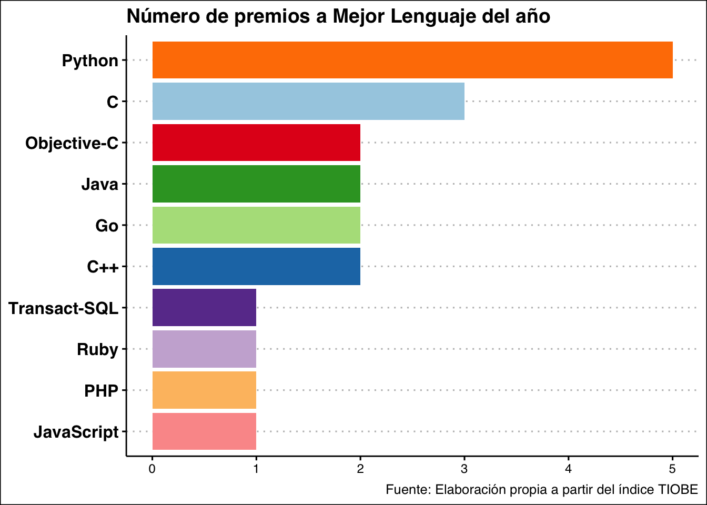
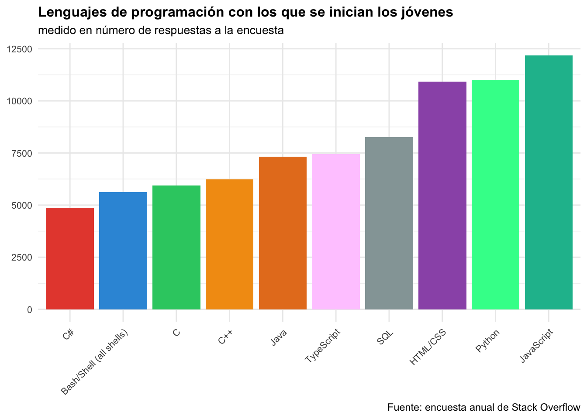
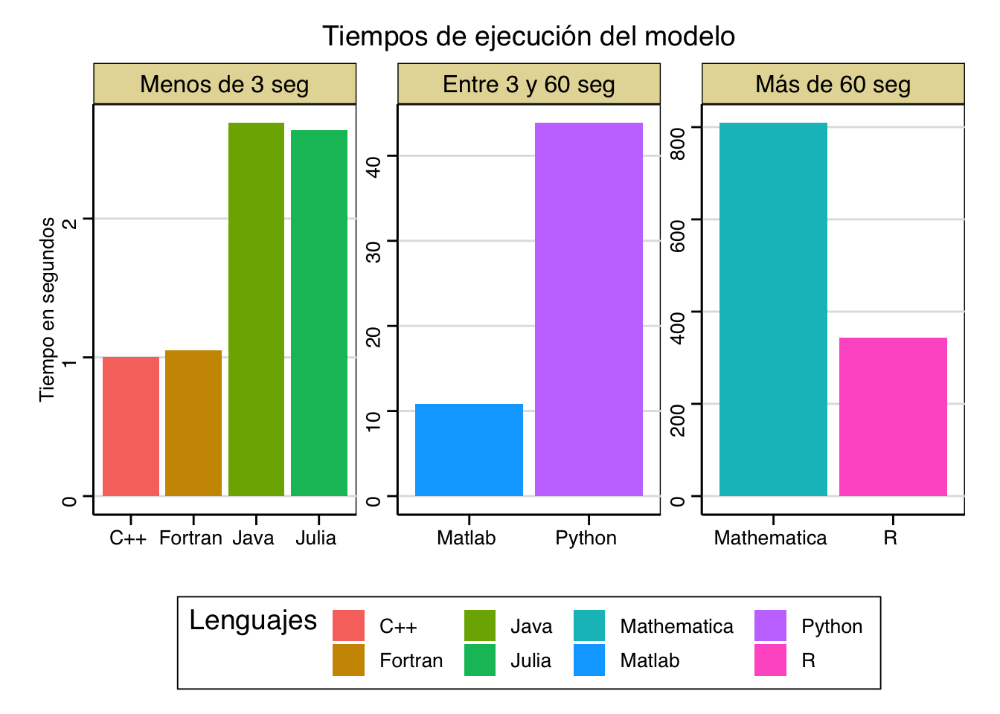
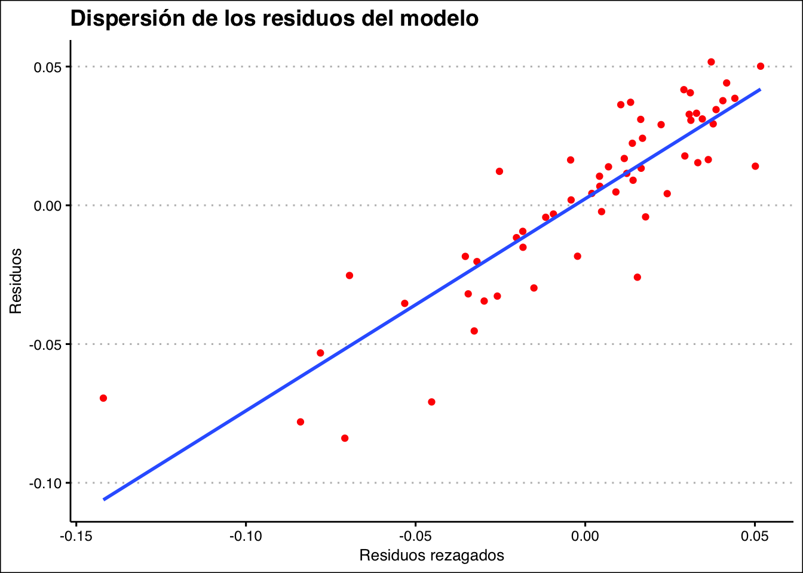
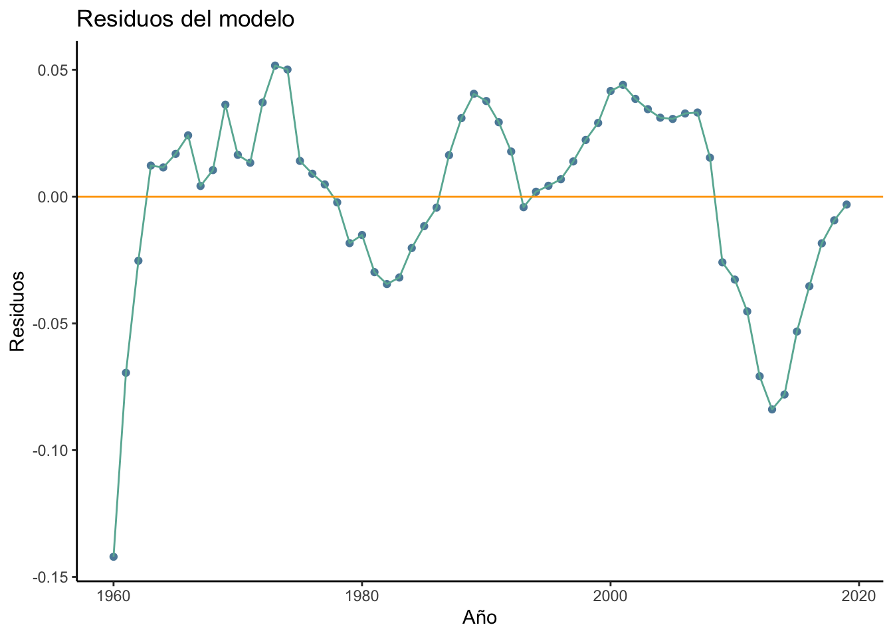

Lenguajes de programación más populares y los mejores para el análisis económico.
trabajo BigData
programación
R
economía
modelos
macroeconomía
econometría
Autores/as
Alejandro Lucas (aluse@alumni.uv.es)
Adrián Guijarro (aguimar2@alumni.uv.es)
Luis Díaz (reyna@alumni.uv.es)
Fecha de publicación
19 de diciembre de 2023
Código
#- Paquetes empleados en el trabajo:library(tiobeindexr)library(tidyverse)library(gt)library(RColorBrewer)library(ggthemes)library(highcharter)library(gtExtras)library(rio)library(tidyr)library(here)library(readxl)library(ggplot2)library(dplyr)library(readr)library(reshape2)library(stargazer)library(vembedr)library(rio)
Introducción
El objetivo del presente trabajo es hacer una revisión sobre la evolución de la popularidad que tiene, en la actualidad, cada uno de los más famosos lenguajes de programación; asimismo, queremos hablar sobre la programación en Economía, mostrando por qué es fundamental manejar con cierta soltura un lenguaje (o más, preferiblemente), si uno busca ser un buen economista. Al final, esta es una asignatura única en el plan de estudios, que no solo sirve para darle una cantidad ingente de trabajo al profe o para que nosotros podamos evitar estudiar Sistema Tributario o Economía Ambiental, sino para que podamos sintetizar en un análisis riguroso y reproducible todas esas teorías económicas (y sus respectivos modelos) que estudiamos a lo largo del grado.
Primeramente, para estudiar la popularidad de los distintos lenguajes emplearemos el package tiobeindexr, el repo del paquete en CRAN está aquí, mientras que el repo del paquete en Github está aquí.
Análisis del Índice TIOBE
El índice de la Comunidad de Programación de TIOBE es un indicador de la popularidad de los lenguajes de programación, el cuál es actualizado una vez al mes. Para calcular los ratings se basan en el número de búsquedas en motores de busqueda populares(Google, Yahoo, Wikipedia, Youtube, etc) que incluyen el nombre de cada lenguaje de programación. Un aspecto que cabe resaltar es que el índice TIOBE no nos muestra cual es el mejor lenguaje de programación del mundo, ni siquiera cual es el lenguaje en el que se han escrito más líneas de codigo, pero si que nos ofrece información acerca de si nuestras skills como programadores están actualizadas, o por el contrario, si debemos empezar a adoptar algún nuevo lenguaje.
Una cosa que debemos matizar es que, debido a que hemos empleado el paquete tiobeindexr, que se actualiza periódicamente, los resultados pueden cambiar (y seguramente hayan cambiado) en el momento en el que el lector esté leyendo esto, por lo que si decide descargarse el repo de nuestro trabajo y correr el código, los resultados pueden variar respecto a los que se pueden ver en esta web.
Dicho esto, podemos empezar el análisis. Actualmente el lenguaje de programación mas popular es Python, seguido de C y C++. Un detalle importante es que el top 5 de lenguajes (Python, C, C++, Java, C#) acapara el 50% de la popularidad en el mundo de la programación. Esto quiere decir que tan solo 5 lenguajes tienen la misma popularidad que los 45 restantes que conforman el indice TIOBE(realmente está compuesto por 50 lenguajes pero solo hemos representado los 20 más importantes).
Nuestro querido R se sitúa en la posición 20 y aunque parezca desolador, R está compitiendo en este índice contra otros lenguajes que son utilizados para otras funciones totalmente diferentes (para las cuáles R no ha sido diseñado desde un principio). No obstante si hablamos de programar con estadística, econometría o similares(es decir cosas que hace un economista) no hay otro lenguaje como R y es imprescindible tener un buen manejo del mismo para ser un buen economista (no usen SPSS).
En el siguiente gráfico1 podemos observar una evolución comparada del top 10 lenguajes de programación. La mayoría de programas(C, C++, Java, JavaScript, etc) se han mantenido en el top 10 desde los inicios de la serie, sin embargo, es especialmente interesante la evolucion de dos lenguajes: Python y SQL.
Como ya bien sabemos Python es posiblemente el GOAT en cuanto a lenguajes de programación y se puede observar en su ascenso en el ranking desde la posición 22 en el año 1993 a ser el número 1 en 2023.
Por otro lado, a pesar de que SQL(Structure Query Language) es un lenguaje antiguo, se introdujo en el índice por primera vez en 2003(manteniéndose por tan solo un año) y no volvió a entrar en el índice hasta el año 2018. Desde entonces ha tenido un crecimiento sin precedentes debido debido al boom del BigData ya que este lenguaje permite manipular, obtener datos e incluso crear bases de datos. SQL es utilizado en todos aquellos sectores donde sea necesario manejar datos y empresas como Spotify o Facebook lo utilizan para almacenar información de sus usuarios.
A continuación hemos realizado una tabla con el Hall of Fame de lenguajes de programacion. En este caso la comunidad TIOBE otorga el premio de “Mejor lenguaje del año” no a aquel que mas popularidad tiene, sino a quién mayor incremento de rating ha tenido.
df_3 <-hall_of_fame()df_logo <-data.frame(lenguaje =c(2022:2003),logo =c("https://th.bing.com/th?id=OIP.H3I3buZeC8Bkez8ADSrqMwHaHa&w=250&h=250&c=8&rs=1&qlt=90&o=6&dpr=1.3&pid=3.1&rm=2","https://th.bing.com/th?id=OIP.uZuulMpBtfWNUBXf8fHu1AHaHa&w=250&h=250&c=8&rs=1&qlt=90&o=6&dpr=1.3&pid=3.1&rm=2","https://th.bing.com/th?id=OIP.uZuulMpBtfWNUBXf8fHu1AHaHa&w=250&h=250&c=8&rs=1&qlt=90&o=6&dpr=1.3&pid=3.1&rm=2","https://th.bing.com/th?id=OIP.bkbn2-K7c9rMBV5dvYXDrQHaIh&w=233&h=268&c=8&rs=1&qlt=90&o=6&dpr=1.3&pid=3.1&rm=2","https://th.bing.com/th?id=OIP.uZuulMpBtfWNUBXf8fHu1AHaHa&w=250&h=250&c=8&rs=1&qlt=90&o=6&dpr=1.3&pid=3.1&rm=2","https://th.bing.com/th?id=OIP.bkbn2-K7c9rMBV5dvYXDrQHaIh&w=233&h=268&c=8&rs=1&qlt=90&o=6&dpr=1.3&pid=3.1&rm=2","https://th.bing.com/th?id=OIP.7nKR4oRAhgtSbD97mDXWWgHaE8&w=306&h=204&c=8&rs=1&qlt=90&o=6&dpr=1.3&pid=3.1&rm=2","https://th.bing.com/th?id=OIP._Lm_T3scKhVEVFC54gcRxwHaE8&w=306&h=204&c=8&rs=1&qlt=90&o=6&dpr=1.3&pid=3.1&rm=2","https://th.bing.com/th?id=OIP.Y4VPmWW2m4_V2WFYOEGYRgHaHa&w=250&h=250&c=8&rs=1&qlt=90&o=6&dpr=1.3&pid=3.1&rm=2","https://www.bing.com/th?id=OIP.LN_XZYfNR1okCsPl0pzIqQAAAA&w=114&h=100&c=8&rs=1&qlt=90&o=6&dpr=1.3&pid=3.1&rm=2","https://th.bing.com/th?id=OIP.rI4h3ndENsvdOwunJgW4aQAAAA&w=212&h=212&c=8&rs=1&qlt=90&o=6&dpr=1.3&pid=3.1&rm=2","https://th.bing.com/th?id=OIP.rI4h3ndENsvdOwunJgW4aQAAAA&w=212&h=212&c=8&rs=1&qlt=90&o=6&dpr=1.3&pid=3.1&rm=2","https://th.bing.com/th?id=OIP.uZuulMpBtfWNUBXf8fHu1AHaHa&w=250&h=250&c=8&rs=1&qlt=90&o=6&dpr=1.3&pid=3.1&rm=2","https://th.bing.com/th?id=OIP.7nKR4oRAhgtSbD97mDXWWgHaE8&w=306&h=204&c=8&rs=1&qlt=90&o=6&dpr=1.3&pid=3.1&rm=2","https://th.bing.com/th?id=OIP.bkbn2-K7c9rMBV5dvYXDrQHaIh&w=233&h=268&c=8&rs=1&qlt=90&o=6&dpr=1.3&pid=3.1&rm=2","https://th.bing.com/th?id=OIP.uZuulMpBtfWNUBXf8fHu1AHaHa&w=250&h=250&c=8&rs=1&qlt=90&o=6&dpr=1.3&pid=3.1&rm=2","https://th.bing.com/th?id=OIP.MWdAq1cI3bRY5--dtqIwJwHaHY&w=250&h=249&c=8&rs=1&qlt=90&o=6&dpr=1.3&pid=3.1&rm=2","https://th.bing.com/th?id=OIP._Lm_T3scKhVEVFC54gcRxwHaE8&w=306&h=204&c=8&rs=1&qlt=90&o=6&dpr=1.3&pid=3.1&rm=2","https://th.bing.com/th?id=OIP.uhYWKsUDBf1rPMjzWZx3OgHaHa&w=250&h=250&c=8&rs=1&qlt=90&o=6&dpr=1.3&pid=3.1&rm=2","https://th.bing.com/th?id=OIP.H3I3buZeC8Bkez8ADSrqMwHaHa&w=250&h=250&c=8&rs=1&qlt=90&o=6&dpr=1.3&pid=3.1&rm=2"))df_gt <-left_join(df_logo,df_3, by =c("lenguaje"="Year")) %>%rename(Year = lenguaje)df_gt <- df_gt %>%rename(Año = Year,Ganador = Winner)tabla_hallfame <-gt(df_gt) %>% gtExtras::gt_color_rows( Año,palette ="viridis", pal_type ="continuous") %>% gtExtras::gt_img_rows(columns = logo, img_source ='web') %>%tab_header(title ="Mejor lenguaje de programación de cada año",subtitle ="Según el índice TIOBE") %>% gtExtras::gt_theme_538()#- tabla_hallfame
Código
tabla_hallfame
Mejor lenguaje de programación de cada año
Según el índice TIOBE
Año
logo
Ganador
2022
C++
2021
Python
2020
Python
2019
C
2018
Python
2017
C
2016
Go
2015
Java
2014
JavaScript
2013
Transact-SQL
2012
Objective-C
2011
Objective-C
2010
Python
2009
Go
2008
C
2007
Python
2006
Ruby
2005
Java
2004
PHP
2003
C++
Python es el lenguaje más laureado con un total de 5 premios, cifra muy superior a la del resto de sus competidores. En segundo lugar se encuentra C con 3 premios(cabe destacar que tanto Python como C son los dos lenguajes con más premios y a su vez los más populares en la actualidad). Finalmente compartiendo la última posición del podio se hayan Objective-C, Go, Java y C++ todos con 2 premios.
df_3 <-hall_of_fame()df_3 <- df_3 %>%rename( Ganador =`Winner`) %>%group_by(Ganador) %>%count(n()) %>%select(1,3) %>%rename(numero_premios = n )p_winners <-ggplot()+geom_bar(data = df_3, aes(x =fct_reorder(Ganador, numero_premios), y = numero_premios ,fill = Ganador), stat ="identity") +theme_clean() +labs(title ="Número de premios a Mejor Lenguaje del año",caption ="Fuente: Elaboración propia a partir del índice TIOBE",y =NULL,x =NULL) +theme(legend.position ="none",axis.text.y =element_text(size =12, face ="bold")) +scale_fill_brewer(palette ="Paired") +coord_flip()#- p_winners
Código
p_winners

Encuesta de Stack Overflow
La Encuesta de Desarrolladores de Stack Overflow es una encuesta anual que realiza la plataforma de preguntas y respuestas centrada en la programación y el desarrollo de software. Esta encuesta es una de las mayores y más completas en la industria de la tecnología, recopila datos de desarrolladores de todo el mundo y cubre una amplia gama de temas.
Por esta razón, parece muy razonable atender a los datos que nos provee esta encuesta para poder responder a determinadas preguntas de interés sobre los lenguajes de programación y su contexto social en el mundo.
¿Con qué lenguajes suelen comenzar los jóvenes que empiezan carrera en la programación?
Una de las preguntas que más interesa a la hora de aprender a programar es precisamente esta: ¿con qué lenguaje empezar a programar?. Especialmente son aquellos más jóvenes que deciden iniciarse en el mundo de la programación o el desarrollo de software quienes se hacen más a menudo esta pregunta.
Para hacer frente a esta cuestión, hemos descargado e instalado en una carpeta dentro del project los datos en formato .csv de la encuesta. En ella, aparecen decenas de miles de observaciones y distintas variables, de las cuales, daremos más importancia a dos: la franja de edad, que en este caso son los jóvenes de 18 a 24 años, y los diez lenguajes más populares. De esta manera, obtendremos una lista de lenguajes ordenados de menor a mayor según el uso que se le de en esta franja de edad.
Primero, cargamos los datos y los arreglamos para poder trabajar con ellos.
colores <-c("#3498db", "#2ecc71", "#e74c3c", "#f39c12", "#9b59b6", "#e67e22", "#1abc9c","#33FF99","#95a5a6", "#FFCCFF")diez_mas_usados <-ggplot(df1, aes(x =reorder(LanguageHaveWorkedWith, Observaciones), y = Observaciones)) +geom_bar(stat ="identity", fill = colores) +labs(title ="Top 10 Lenguajes de Programación para Personas de 18-24 años",x ="Lenguajes de Programación",y ="Número de Observaciones") +theme_minimal() +theme(axis.title =element_blank(),axis.text.x =element_text(size =8, angle =45, hjust =1),axis.text.y =element_text(size =8),plot.title =element_text(size =12, face ="bold"),plot.subtitle =element_text(size =10)) +labs(title ="Lenguajes de programación con los que se inician los jóvenes",subtitle ="medido en número de respuestas a la encuesta",caption ="Fuente: encuesta anual de Stack Overflow") +guides(fill =FALSE) +# Eliminar la leyenda de la estética filltheme(axis.text.x =element_text(angle =45, hjust =1))#- diez_mas_usados
Código
diez_mas_usados

Representamos así que los jóvenes, a la edad en la que usualmente empiezan a hacer carrera dentro de la programación, o incluso si simplemente quieren estudiar por la pura satisfacción de conocimiento, eligen con especial preferencia tres lenguajes: JavaScript, Python y HTML/CSS, destacando el primero de los mencionados.
Los jóvenes a menudo eligen aprender JavaScript porque es un lenguaje de programación versátil y ampliamente asentado ya en la comunidad. JavaScript se utiliza por ejemplo en el desarrollo web para crear interactividad en las páginas, lo que lo hace atractivo para aquellos interesados en la creación de sitios web dinámicos. Además, es un lenguaje accesible para principiantes, tiene una comunidad activa que comparte recursos educativos y ofrece oportunidades laborales en el ámbito del desarrollo web.
¿Cuál es el lenguaje de programación más popular para cada grupo de edad?
Ahora, aunque podamos ver cuales son aquellos lenguajes más populares tanto en la población general como en el caso concreto de los jóvenes principiantes, sigue siendo interesante señalar cuales son los lenguajes favoritos de los usuarios respecto a distintas franjas de edad, para conocer más o menos el perfil medio de un programador cualquiera con determinados años de edad.
Para esta pregunta haremos valer una tabla, no un gráfico al uso a lo ggplot2. Después de cargar paquetes, arreglamos el data.frame original para poder trabajar cómodamente con él.
Código
#De nuevo, lo primero que haremos será cargar los paquetes necesarios.df2 <- df %>%filter(!is.na(LanguageHaveWorkedWith)) %>%group_by(Age, LanguageHaveWorkedWith) %>%summarise(Observaciones =n()) %>%group_by(Age) %>%top_n(1, Observaciones) %>%arrange(Age, desc(Observaciones)) %>%select(-Observaciones) %>%rename(lenguaje = LanguageHaveWorkedWith)df2#> # A tibble: 8 × 2#> # Groups: Age [8]#> Age lenguaje #> <chr> <chr> #> 1 18-24 years old JavaScript#> 2 25-34 years old JavaScript#> 3 35-44 years old JavaScript#> 4 45-54 years old JavaScript#> 5 55-64 years old SQL #> 6 65 years or older SQL #> 7 Prefer not to say JavaScript#> 8 Under 18 years old Python
Tenemos el data.frame ordenado, falta añadirle más cosas para poder hacer una tabla que exprese mejor los resultados, tales como una paleta de colores e iconos de los lenguajes.
Código
df_logos <-data.frame(lenguaje =c("Python", "C", "C++", "Java", "C#", "JavaScript", "PHP", "Visual Basic", "SQL", "Assembly language", "Scratch", "Fortran", "Go", "MATLAB", "Kotlin", "Delphi/Object Pascal", "Swift","Ruby","R","Rust", "Golang"),logo =c("https://tse4.mm.bing.net/th?id=OIP.EDJ9xoErBbZqK2tExVoJfAAAAA&pid=Api&P=0&h=180","https://tse1.mm.bing.net/th?id=OIP.bkbn2-K7c9rMBV5dvYXDrQHaIh&pid=Api&rs=1&c=1&qlt=95&w=103&h=118","https://tse1.mm.bing.net/th?id=OIP.ggb-3B-8LRfbgS0lPLYNxwHaIU&pid=Api&rs=1&c=1&qlt=95&w=105&h=118","https://tse1.mm.bing.net/th?id=OIP.dJ7A1hPb-BDRBrhOmhrVAgHaHa&pid=Api&P=0&h=180","https://tse4.mm.bing.net/th?id=OIP.2x1yN8k3MVCrkJFR_C5k-wHaIp&pid=Api&P=0&h=180","https://tse1.mm.bing.net/th?id=OIP.YPYdVAg5ieRspLI6HIpmDQHaIB&pid=Api&P=0&h=180","https://tse1.mm.bing.net/th?id=OIP.pkqphAig1t-PCsy4dkVrfAHaD5&pid=Api&P=0&h=180","https://tse1.mm.bing.net/th?id=OIP.Y224uoZnCs8yY0Sos_h4cQHaDd&pid=Api&rs=1&c=1&qlt=95&w=258&h=120","https://tse4.mm.bing.net/th?id=OIP.S_9pgiKacbi3FxPKxDmusgHaFy&pid=Api&P=0&h=180","https://tse4.mm.bing.net/th?id=OIP.v5m2HW3FI3RbopnK8Cs6HgAAAA&pid=Api&P=0&h=180","https://tse4.mm.bing.net/th?id=OIP.bHt6sdtkwUqP91oPKlruGgHaEM&pid=Api&P=0&h=180","https://tse2.explicit.bing.net/th?id=OIP.tLfIejOZiP_H0Zse0NIn2QAAAA&pid=Api&P=0&h=180","https://tse3.mm.bing.net/th?id=OIP.7nKR4oRAhgtSbD97mDXWWgHaE8&pid=Api&P=0&h=180","https://tse2.mm.bing.net/th?id=OIP.cI8KflTKlnmraGFa22XpKQHaEK&pid=Api&P=0&h=180","https://tse3.mm.bing.net/th?id=OIP.gW_YaXsZmuSntd_sy5zkIwHaHa&pid=Api&P=0&h=180","https://tse2.mm.bing.net/th?id=OIP.hEP7hOlvIzhKU1fGpizd7QAAAA&pid=Api&P=0&h=180","https://tse1.mm.bing.net/th?id=OIP.XozeB5BRQSzNCO6k7om62QHaHa&pid=Api&P=0&h=180","https://tse1.mm.bing.net/th?id=OIP.2BwE10YiTSXRrnW2LnVh8wHaHa&pid=Api&P=0&h=180","https://tse3.mm.bing.net/th?id=OIP.0rg-o4mEzLO5EHJ1zS52YwHaGe&pid=Api&P=0&h=180","https://tse4.mm.bing.net/th?id=OIP.YmPfYoQK3WvGEjFXusKV9QHaHa&pid=Api&P=0&h=180", "https://seeklogo.com/images/G/go-logo-046185B647-seeklogo.com.png"))df2_final <-left_join(df2, df_logos, by = ("lenguaje"))#El data.frame daba problemas así que lo he rehecho con un poco de ayuda de R base.ages <- df2_final$Agelenguajes <- df2_final$lenguajelogos <- df2_final$logodataframef2_final <-data.frame(ages, lenguajes, logos)
Ahora sí, creamos la tabla con ayuda del paquete gt.
gt_tbl <- dataframef2_final %>%gt() %>% gtExtras::gt_theme_espn() %>%cols_width("lenguajes"~px(100), "logos"~px(80)) %>%tab_header(title ="Lenguajes de programación más populares por franjas de edad",subtitle ="Según la encuesta anual de Stack Overflow.")%>% gtExtras::gt_img_rows(columns = logos, img_source ='web')#- gt_tbl
Código
gt_tbl
Lenguajes de programación más populares por franjas de edad
Según la encuesta anual de Stack Overflow.
ages
lenguajes
logos
18-24 years old
JavaScript
25-34 years old
JavaScript
35-44 years old
JavaScript
45-54 years old
JavaScript
55-64 years old
SQL
65 years or older
SQL
Prefer not to say
JavaScript
Under 18 years old
Python
Los resultados son evidentes: JavaScript arrasa en la mayoría de las edades por las mismas razones que ya hemos expuesto en la pregunta anterior. Además, es un lenguaje ya muy consolidado a lo largo de los años, como podemos ver por su prevalencia incluso en programadores senior.
¿Cuales son los medios más comunes con los que las personas aprenden a programar?
La programación consiste en un conjunto de conocimientos, herramientas y habilidades que permiten al usuario llevar a cabo el proceso de crear un conjunto de instrucciones que le dicen a una computadora como realizar algún tipo de tarea. Todos estos elementos de aprendizaje son muy diversos y no hay una, ni dos, ni tres únicas maneras de aprenderlos.
Así pues, también nos parece que abordar cuales son las principales fuentes de estudio de aquellos que tienen intención o incluso han logrado alcanzar dichas destrezas es algo que suma bastante a nuestro trabajo.
De nuevo, cargamos datos y “limpiamos” el data.frame.
colores <-c("#3498db", "#2ecc71", "#e74c3c", "#f39c12", "#9b59b6", "#e67e22", "#1abc9c","#33FF99", "#FFCCFF")gt_df <-gt(df) %>% gtExtras::gt_plt_dot(column ="Observaciones", category_column =`learn`, max_value =NULL, palette = colores) %>% gtExtras::gt_theme_nytimes() %>%cols_width(`learn`~px(400), 2~px(150)) %>%tab_header(title ="Maneras más usuales que se usan para aprender programación",subtitle ="Según la encuesta anual de Stack Overflow.")#- gt_df
Código
gt_df
Maneras más usuales que se usan para aprender programación
Según la encuesta anual de Stack Overflow.
learn
Observaciones
Other online resources (e.g., videos, blogs, forum)
70244
Books / Physical media
45406
School (i.e., University, College, etc)
43957
Online Courses or Certification
43201
On the job training
40380
Colleague
20523
Friend or family member
9936
Coding Bootcamp
8602
Hackathons (virtual or in-person)
7033
El resultado es muy interesante. Si bien el aprendizaje mediante medios físicos o más tradicionales como libros y programas educativos en universidades y centros sigue estando en la cabeza de la lista, en el primer puesto está nada más y nada menos que el aprendizaje por recursos en línea.
Esto al final únicamente evidencia la tendencia que podemos haber ido notando desde inicios de siglo, sobre todo durante la última década y más aun tras la pandemia. Cada vez son más los alumnos que aprenden vía telemática a través de trabajos, blogs y vídeos en la red, y, como cabía de esperar de los alumnos de un sector tan ligado a la tecnología, los programadores no se han quedado atrás en esta tendencia, siendo que incluso el aprendizaje por cursos certificados está a muy corta distancia por debajo del aprendizaje en la universidad.
¿Cuales son los lenguajes cuyo manejo brinda mayores salarios en promedio?
La respuesta a esta pregunta está en unos datos que no son de esta encuesta, los hemos obtenido de una web distinta, pero lo incluimos en esta sección porque creemos que está muy relacionado con la temática de importancia y contexto socio económico de los lenguajes de programación. De esta forma, primero cargamos los datos y añadimos elementos que nos favorecerán el hacer una tabla que muestre los datos ordenados, de mayor a menor salario mediano.
colores <-c("#3498db", "#2ecc71", "#e74c3c", "#f39c12", "#9b59b6", "#e67e22", "#1abc9c","#33FF99","#95a5a6", "#FFCCFF")gt_salarios <-gt(df_final) %>% gtExtras::gt_plt_dot(column ="Median Salary ($)", category_column =`lenguaje`, max_value =NULL, palette = colores) %>% gtExtras::gt_theme_espn() %>%cols_width(`lenguaje`~px(400), 3~px(80)) %>%tab_header(title ="Lenguajes de programación con mejores salarios",subtitle ="Según la web 4 day week.") %>% gtExtras::gt_img_rows(columns = logo, img_source ='web')#- gt_salarios
Código
gt_salarios
Lenguajes de programación con mejores salarios
Según la web 4 day week.
lenguaje
Median Salary ($)
logo
Swift
116000
Python
105000
Golang
100000
C++
100000
Java
95000
Ruby
95000
Rust
88000
SQL
85000
La primera conclusión más o menos evidente es la siguiente: en el sector de la programación, los salarios parecen ser relativamente altos. Ahora bien, destaca que el lenguaje cuyo manejo está mejor remunerado no es aquel más popular en ninguna franja de edad, SWIP es un lenguaje creado por Apple enfocado al desarrollo de aplicaciones para iOS y macOS, el ecosistema de la empresa mencionada.Swift puede llamar a funciones de C y tiene la intención de ser un lenguaje con alta seguridad y con un desarrollo rápido y preciso. Además, es de código abierto.
Programación en Economía
De un tiempo a esta parte, los economistas hemos conseguido interiorizar una idea: la programación es una de las habilidades fundamentales que tenemos que dominar a la hora de realizar cualquier tipo de análisis económico mínimamente avanzando. En este sentido, nuestro objetivo es mostrar dos ejemplos de como saber programar (en el primer caso, en varios lenguajes, mientras que en el segundo caso, lo haremos en R) es un requisito sine qua non para realizar determinadas tareas medianamente básicas. Es cierto que uno puede defenderse en algunas de estas tareas (a veces con más éxito y otras con menos) con ciertos programas como Stata, Eviews, SPSS, etc. Pero, al final del día, cuando uno quiere obtener la solución de un modelo dinámico de equilibrio general (macroeconomía) o conocer la caracterización de un equilibrio en teoría de juegos (microeconomía), tendrá que programar de verdad, porque ahí, los programas de clics (que algunos, además, cuestan una millonada) no sirven para nada (obviando que si sirviesen harían análisis no reproducible, no solo porque no son open source y además de pago, sino porque la dinámica de clicar lo hace inviable).
Estimando un modelo estocástico neoclásico de crecimiento.
Para analizar la velocidad de computación de diferentes lenguajes de programación en Economía podemos estimar un mismo modelo en varios lenguajes y comprobar el desempeño de cada uno de ellos; esto, evidentemente, no se nos ha ocurrido a nosotros, de hecho, un economista que ha trabajado bastante con estas cosas es Jesús Fernández-Villaverde, nosotros los que hemos hecho es seleccionar uno de sus papers2 para poder comparar la velocidad de computación de un modelo estocástico neoclásico de crecimiento. Antes de dar los resultados, vamos a explicar brevemente en que consiste el modelo y por qué es una tarea ciertamente demandante en términos de computación. Tranquilos, no entraremos en detalles y se podrá entender bien la idea general, quien quiera se puede leer el paper, nosotros solo explicaremos lo básico.
Es cierto que el modelo mola bastante (no es broma), básicamente porque es una síntesis de como se hace macroeconomía actualmente: iterando funciones. Tanto es así, que el propio Villaverde escribe en el asbtract del paper que es “the workhorse of modern macroeconomics”, y bueno, si lo dice él, será verdad (recordemos que es un tipo bastante listo, o eso parece, al menos). La idea del modelo es bastante sencilla de entender: un planificador social tiene que maximizar un función de valor escogiendo una combinación de consumo \(c_t\) y capital \(k_t\). La función se maximizará cuando se alcance el valor óptimo de capital futuro:
\[\max_{\{c_t, k_t+1\}}\mathbb{E}_0\sum_{t=0}^{\infty}(1 - \beta)\beta^t\log c_t\] La \(\mathbb{E}\) es el operador de expectativas, mientras que el parámetro \(\beta\) simplemente es un factor de descuento temporal, ahora bien, esta función está sujeta a la siguiente restricción de recursos: \[c_t + k_{t+1} = z_tk_{t}^\alpha + (1 - \delta)k_t\] Dos apuntes más y terminamos (prometido): \(z_t\) es la productividad, y sus valores se situarán en un intervalo de puntos discretos \(\{z_1,..., z_n\}\) que evolucionan de acuerdo a una matriz de transición de Markov \(\prod\). Después de unos ajustes y de calibrar los parámetros, formulamos el problema de maximización de manera recursiva en términos de la función de valor \(V(.,.)\) con un operador de Bellman, de manera que finalmente tenemos el problema que nuestro ordenador tendrá que resolver: \[V(k,z) = \max_{k'}(1 - \beta)\beta^t\log(zk^\alpha-k')+\beta\mathbb{E}[V(k',z')|z]\] El problema es ciertamente demandante, para que la función converga a su valor óptimo se han realizado (en todos los lenguajes) 257 iteraciones, usando 17.820 puntos para \(k\) uniformemente distribuidos en torno al 50 por ciento del valor en estado estacionario del capital \(k\). Los puntos de \(k\) se han escogido de manera que en C++y Fortran pueda resolverse el problema en, más o menos, un segundo.
ex_times <- readxl::read_excel("./datos/execution_times.xlsx") #-importamos la tabla del pdf del paper a una hoja de cálculo, la cargamos, y ya trabajamos con ella en Rex_times <- ex_times %>%select(1, 4) %>%na.omit() colnames(ex_times) <-c("Lenguajes", "times")ex_times <- ex_times[2:9,] ex_times <- ex_times %>%mutate(times =parse_number(times))ex_times <- ex_times %>%mutate(category =case_when(as.numeric(times) <3~"Menos de 3 seg",as.numeric(times) >=3&as.numeric(times) <60~"Entre 3 y 60 seg",as.numeric(times) >=60~"Más de 60 seg",TRUE~NA_character_)) ex_times$factor_cat <-as.factor(ex_times$category)orden_correcto <-c("Menos de 3 seg", "Entre 3 y 60 seg", "Más de 60 seg")ex_times$factor_cat <-factor(ex_times$category, levels = orden_correcto)ex_times_plot <- ex_times %>%ggplot() +aes(x = Lenguajes, y = times, fill = Lenguajes) +geom_bar(stat ="identity") +facet_wrap(~factor_cat, scales ="free") +theme_stata(scheme ="s1color") +labs(title ="Tiempos de ejecución del modelo", x ="", y ="Tiempo en segundos")
Código
ex_times_plot

En el paper ejecutan el modelo en todos los lenguajes en dos ordenadores: un Mac y un Windows, además de usar diferentes compiladores; para no entrar en detalles técncos, escogemos el compilador de cada lenguaje que más rápido ejecuta el código y, además, seleccionamos los tiempos de ejecución del Mac, básicamente porque un servidor está usando uno ahora mismo y porque los tiempos no cambian demasiado, a excepción de: Fortran, que tarda el doble (dos segundos en lugar de uno), R que tarda unos 40 segundos menos y Mathematica que tarda casi 200 segundos menos.
Lo primero que observamos es que los lenguajes que mejor desempeño presentan (menos de 3 segundos en ejecutarse) son los compilados, junto a Julia, que es interpretado. El caso de Julia es interesante, su sintáxis es muy similar a la de Matlab, usa un compilador JIT que lo hace bastante rápido (entre otras características bastante guais que tiene), puede llamar a funciones de C o de Fortran sin necesidad de usar APIs y, bueno, es gratis, Matlab no (además los años ya le pasan factura y su interfaz está desfasada, por otro lado pensemos que Julia nació en 2012). Después, tenemos a Matlab, que tarda unos 10 segundos en ejecutarse, y a Python, que tarda algo más de 40 segundos. Dejando de lado que Mathematica es el último (y con diferencia) y que no me interesa hablar de él porque una vez lo usé y (casi) me tocó venderle mi alma al diablo para hacer una gráfica bastante sencilla, podemos centrarnos en R.
Si usamos el R compiler package sigue siendo 200 veces más lento que el lenguaje más rápido (en el peor de los casos lo sería casi 500 veces), esto tiene una explicación y hemos de ser comprensivos, el diseño original de R (de los años 90) y determinadas decisiones (de las que no tengo mucha idea) que se tomaron en ese momento, junto a la éxito inesperado que ha terminado teniendo en la actualidad, pueden dificultar según qué tareas. Pero bueno, tampoco pasa nada, la realidad es que nadie más que cuatro frikis usan R para resolver este tipo de modelos, de hecho, hasta hace aproximadamente una semana y tres días (es broma, hasta septiembre de este mismo año), ni siquiera se podían estimar modelos de equilibrio general en R como se haría en el resto de lenguajes, ahora tenemos el paquete DynareR que nos facilita muuuucho la tarea, de hecho, está ideado específicamente para resolver modelos DSGE (dynamic stochastic general equilibrium) y OLG (overlapping generations), habrá que ver que pasa en un futuro. Como iba diciendo, nadie usa R para estas cosas, donde realmente brilla es en estadística y econometría (ahora tocaremos este tema), ya que, solamente en el repositorio CRAN, hay casi 20.000 paquetes diferentes para estas dos áreas.
En suma, el bilingüismo, al menos en lo que a programación en Economía se refiere, es altamente recomendable, fundamentalmente porque las ventajas a la hora de realizar determinadas tareas son enormes en lenguaje respecto a otro, asimismo, los lenguajes evolucionan, lo que hoy se usa puede que mañana no, y lo que no se usa, posiblemente mañana sí. La cuestión es ser conscientes de que cada lenguaje es una herramienta diferente y cuantas más herramientas tengamos, mejor podremos solucionar los problemas que nos vayamos encontrando en nuestro camino como economistas.
Una miqueta de Econometría
Una vez hemos analizado como se comportan los diferentes lenguajes, podemos hacer un (mini) análisis con R, al final, R está diseñado para ser la herramienta excelente a la hora de hacer estadística y econometría, entre otras cosas. Esta vez haremos algo un poquito más manejable que el modelo de antes, vamos a estimar la función de producción Cobb-Douglas en el caso de España. Vamos a usar los datos de las Penn World Table, y con eso, hacemos una regresión por MCO. Esto, a parte de ser cutre, evidentemente generará problemas, nosotros nos vamos a centrarnos en analizar el problema de autocorrelación, el lector debería saber que es esto (Pedro, sabemos de sobra que tú ya lo sabes, no te ofendas por la explicación) y yo no debería explicarlo, pero como nunca se sabe, haremos un repaso rápido.
Cuando estimamos los parámetros de un modelo por minímos cuadrados ordinarios buscamos que nuestros estimadores cumplan unas características básicas, si se cumplen, nuestro estimador será ELIO (estimador lineal insesgado óptimo), o BLUE, por sus siglas en inglés. Ahora bien, entre los miles de millones de problemas que podemos tener a la hora de estimar un modelo por MCO, hay uno en concreto que puede tocarnos las pelotas la moral como no lo tratemos adecuadamente, y este es la autocorrelación. Básicamente, nuestro modelo presentará autocorrelación cuando los residuos guarden algún tipo de patrón entre ellos, y por movidas matemáticas y estadísticas varias, esto hará que nuestro estimador no sea óptimo.
Nuestro objetivo es doble: mostraros una manera un poco de andar por casa para detectar la autocorrelación y, de manera breve, como se puede hacer Econometría con R de manera sencilla y sin morir en el intento.
Lo primero de todo es coger los datos, moldearlos para que estén en un formato amigable y estimar el siguiente modelo: \[\ln(PIB_t) = \beta_1 + \beta_2\ln(L) + \beta_3\ln(K) + u_t\] Algún lector avispado ya sabrá el significado de la \(L\) y de la \(K\), a parte de eso, como ya hemos explicado lo básico de MCO y de autocorrelación, la explicación de por qué pasamos las variables a logaritmos no va a estar presente (en serio, si hace falta explicar eso, ya no tenéis opciones de salvación, solamente os podéis arrepentir de vuestros pecados, it’s over for you💀💀):
Código
#Modelo econométrico ----------df <-read.csv("./datos/FebPwtExport12152023.csv")#- pasamos los datos a formato widedf <-dcast(df, RegionCode + YearCode ~ VariableCode, value.var ="AggValue")#- cambiamos el nombre a uno más familiar y creamos la variable trabajo y filtramos los datos a partir del 78df <- df %>%mutate(l = avh*emp) %>%rename(k = rnna,pib = rgdpna,year = YearCode) %>%filter(year >=1960)modelo <-lm(log(pib) ~log(l) +log(k), data = df)#- stargazer(modelo, type = "html")
Dependent variable:
log(pib)
log(l)
0.212***
(0.041)
log(k)
0.747***
(0.008)
Constant
0.112
(0.372)
Observations
60
R2
0.995
Adjusted R2
0.995
Residual Std. Error
0.038 (df = 57)
F Statistic
5,635.315*** (df = 2; 57)
Note:
p<0.1; p<0.05; p<0.01
Una vez tenemos el modelo estimado y, habiéndonos saltado cualquier tipo de interpretación estadística de los datos (seamos realistas, no es el momento para ponernos a hacer estas cosas, aquí se nos valora por programar), podemos pasar a detectar la autocorrelación.
Vamos a hacerlo de manera gráfica, y una vez veamos indicios de no autocorrelación, autocorrelación positiva, o autocorrelación negativa, vamos a estimar el parámetro que usamos para medirla, que como sabréis, es \(\rho\), en nuestro caso será \(\rho_1\).
Primero, podemos plottear la dispersión de los residuos con sus valores rezagados:
df_residuos <-data.frame(x =lag(resid(modelo)), y =resid(modelo)) %>%na.omit()autocorrelacion <- df_residuos %>%ggplot() +geom_point(color ="red") +aes(x = x, y = y) +labs(title ="Dispersión de los residuos del modelo", x ="Residuos rezagados",y ="Residuos") +theme_clean() +geom_smooth(se =FALSE, method = lm)#- autocorrelacion
Código
autocorrelacion

Vemos que, evidentemente, existe autocorrelación positiva, cuando una varibale crece, la otra también lo hace. Sabiendo esto, también podemos plottear los residuos en una serie temporal para detectar patrones:
autocorrelación_plot <- df %>%ggplot() +geom_point(color ="#5D8AA8") +geom_line(color ="#69b3a2") +aes(x = year, y =resid(modelo)) +labs(title ="Residuos del modelo", x ="Año",y ="Residuos") +geom_hline(yintercept =0, color ="orange", size=.5) +theme_classic()#- autocorrelación_plot
Código
autocorrelación_plot

Vemos que el modelo muestra patrones en los residuos que se presentan regularmente a lo largo de determinados intervalos de tiempo. Cuando los intervalos de tiempo en los que se da este patrón son de una duración notable, observamos indicios de que la autocorrelación es positiva, pues si el valor del residuo es alto en un momento dado, es muy probable que también sea alto en el momento posterior.
Teniendo pruebas suficientes del carácter de la autocorrleación, finalmente, de manera un poco rudimentaria e improvisada (sin usar el test Durbin Watson, el Llung-Box o alguno de los varios que hay), podemos estimar el valor del coeficiente de autocorreelación \(\rho_1\), sabiendo, eso sí, que será un número entre 0 y 1. Básicamente, calculamos una regresión usando como regeresor los residuos rezagados del modelo, mientras que la variable explicada serán los residuos (a secas). En el código especificamos que no queremos intercepto y, teóricamente, deberíamos tener el valor estimado del coeficiente de autocorrelación.
Podemos comprobar rápidamente que el valor estimado de \(\rho_1=0.7641839\) es consistente con los dos análisis gráficos que hemos hecho previamente sobre los residuos, por lo que la conclusión será la misma: autocorrelación positiva y estimación no óptima, nuestros estimadores MCO no serán BLUE. Pero no pasa nada, el profe podrá proponer un modelo alternativo que no tenga este problema, mientras tanto, yo dejo por aquí esta canción, que sí que es blue 😉.
Conclusión
Con este trabajo hemos querido destacar la importancia que tiene la programación en la economía, fundamentalmente en el ámbito de la investigación. Nos parece importante resaltar las cualidades que tiene poseer estas herramientas como profesional en este campo, pues mientras se suele dar por obvia la necesidad de saber programar en estudios como las matemáticas o las ciencias puras, usualmente se ignora las necesidades que puede tener un economista de aprender programación para ejercer con rigor y efectividad su trabajo, hasta el punto en el que nuestra propia universidad no ofrecía esta asignatura hace un lustro.
Por eso, gran parte de este trabajo, además de demostrar las virtudes de la aplicación de conocimientos sobre programación en la investigación económica, ha ido dirigido a explicar en rasgos generales cuales son los lenguajes más populares y los que con mayor frecuenecia se suelen utilizar según determinados contextos, tales como la edad o el salario esperado. También hemos querido señalar métodos y fuentes comunes con las que los alumnos, desde los más novatos a los más expertos suelen acudir para aprender sobre programación o para resolver las dudas que puedan surgir en el proceso de desarrollo.
Por último, creemos que este conjunto de conocimientos y herramientas no es simplemente importante, sino que es indispensable para nuestra formación como economistas de calidad, y si bien apreciamos haber dado esta asignatura este año, creemos que no es suficiente con una asignatura optativa en el último año de carrera, que lo óptimo sería darla en los primeros años del grado, para poder dedicar los posteriores a pulir en la práctica los conocimientos adquiridos, y más adelante, a expandirlos (machine learning, I.A, deep learning, etc.).
En el gráfico se representa la posición promedio para el periódo de 12 meses↩︎
“Aruoba, S. B., & Fernández-Villaverde, J. (2015). A comparison of programming languages in macroeconomics. Journal of Economic Dynamics and Control, 58, 265-273.”↩︎
Ejecutar el código
---title: "Lenguajes de programación: evolución y programación en Economía"description: | Lenguajes de programación más populares y los mejores para el análisis económico.author: - Alejandro Lucas (aluse@alumni.uv.es)\n - Adrián Guijarro (aguimar2@alumni.uv.es)\n - Luis Díaz (reyna@alumni.uv.es)\ndate: 2023-12-19 categories: [trabajo BigData, programación, R, economía, modelos, macroeconomía, econometría] image: "./imagenes/python_vs_r.png"title-block-banner: "true" #- {true, false, "green","#AA0000"}title-block-banner-color: "white" #-"#FFFFFF" toc-depth: 3smooth-scroll: trueformat: html: backgroundcolor: "#F1F3F4" #-embed-resources: true link-external-newwindow: true css: ./assets/my_css_file.css #- CUIDADO!!!!code-tools: truecode-link: true---```{r}#| code-fold: true#- Paquetes empleados en el trabajo:library(tiobeindexr)library(tidyverse)library(gt)library(RColorBrewer)library(ggthemes)library(highcharter)library(gtExtras)library(rio)library(tidyr)library(here)library(readxl)library(ggplot2)library(dplyr)library(readr)library(reshape2)library(stargazer)library(vembedr)library(rio)```## IntroducciónEl objetivo del presente trabajo es hacer una revisión sobre la evolución de la popularidad que tiene, en la actualidad, cada uno de los más famosos lenguajes de programación; asimismo, queremos hablar sobre la programación en Economía, mostrando por qué es fundamental manejar con cierta soltura un lenguaje (o más, preferiblemente), si uno busca ser un buen economista. Al final, esta es una asignatura única en el plan de estudios, que no solo sirve para darle una cantidad ingente de trabajo al profe o para que nosotros podamos evitar estudiar Sistema Tributario o Economía Ambiental, sino para que podamos sintetizar en un análisis riguroso y reproducible todas esas teorías económicas (y sus respectivos modelos) que estudiamos a lo largo del grado.Primeramente, para estudiar la popularidad de los distintos lenguajes emplearemos el package `tiobeindexr`, el repo del paquete en CRAN está [aquí](https://cran.r-hub.io/web/packages/tiobeindexr/index.html), mientras que el repo del paquete en Github está [aquí](https://github.com/amrrs/tiobeindexr).## Análisis del Índice TIOBEEl índice de la Comunidad de Programación de [TIOBE](https://www.tiobe.com/tiobe-index/) es un indicador de la popularidad de los lenguajes de programación, el cuál es actualizado una vez al mes. Para calcular los ratings se basan en el número de búsquedas en motores de busqueda populares(Google, Yahoo, Wikipedia, Youtube, etc) que incluyen el nombre de cada lenguaje de programación. Un aspecto que cabe resaltar es que el índice TIOBE no nos muestra cual es el mejor lenguaje de programación del mundo, ni siquiera cual es el lenguaje en el que se han escrito más líneas de codigo, pero si que nos ofrece información acerca de si nuestras skills como programadores están actualizadas, o por el contrario, si debemos empezar a adoptar algún nuevo lenguaje.Una cosa que debemos matizar es que, debido a que hemos empleado el paquete `tiobeindexr`, que se actualiza periódicamente, los resultados pueden cambiar (y seguramente hayan cambiado) en el momento en el que el lector esté leyendo esto, por lo que si decide descargarse el repo de nuestro trabajo y correr el código, los resultados pueden variar respecto a los que se pueden ver en esta web.Dicho esto, podemos empezar el análisis. Actualmente el lenguaje de programación mas popular es **Python**, seguido de **C** y **C++**. Un detalle importante es que el top 5 de lenguajes (Python, C, C++, Java, C#) acapara el 50% de la popularidad en el mundo de la programación. Esto quiere decir que tan solo 5 lenguajes tienen la misma popularidad que los 45 restantes que conforman el indice TIOBE(realmente está compuesto por 50 lenguajes pero solo hemos representado los 20 más importantes).Nuestro querido **R** se sitúa en la **posición 20** y aunque parezca desolador, R está compitiendo en este índice contra otros lenguajes que son utilizados para otras funciones totalmente diferentes (para las cuáles R no ha sido diseñado desde un principio). No obstante si hablamos de programar con estadística, econometría o similares(es decir cosas que hace un economista) **no hay otro lenguaje como R** y es imprescindible tener un buen manejo del mismo para ser un buen economista (no usen SPSS).::: panel-tabset## Código```{r}#| code-fold: true#| warning: falsedf <-top_20()df <- df %>%select(1,4,5)df <- df %>%mutate(porcentaje_numeric =ifelse(str_detect(Ratings, "%"),as.numeric(str_remove(Ratings, "%")),as.numeric(Ratings))) %>%rename(cuota = porcentaje_numeric) %>%select(1,2,4)colores <-c("#3498db", "#2ecc71", "#e74c3c", "#f39c12", "#9b59b6", "#e67e22", "#1abc9c", "#95a5a6")df_logos <-data.frame(lenguaje =c("Python", "C", "C++", "Java", "C#", "JavaScript", "PHP", "Visual Basic", "SQL", "Assembly language", "Scratch", "Fortran", "Go", "MATLAB", "Kotlin", "Delphi/Object Pascal", "Swift","Ruby","R","Rust"),logo =c("https://tse4.mm.bing.net/th?id=OIP.EDJ9xoErBbZqK2tExVoJfAAAAA&pid=Api&P=0&h=180","https://tse1.mm.bing.net/th?id=OIP.bkbn2-K7c9rMBV5dvYXDrQHaIh&pid=Api&rs=1&c=1&qlt=95&w=103&h=118","https://tse1.mm.bing.net/th?id=OIP.ggb-3B-8LRfbgS0lPLYNxwHaIU&pid=Api&rs=1&c=1&qlt=95&w=105&h=118","https://tse1.mm.bing.net/th?id=OIP.dJ7A1hPb-BDRBrhOmhrVAgHaHa&pid=Api&P=0&h=180","https://tse4.mm.bing.net/th?id=OIP.2x1yN8k3MVCrkJFR_C5k-wHaIp&pid=Api&P=0&h=180","https://tse1.mm.bing.net/th?id=OIP.YPYdVAg5ieRspLI6HIpmDQHaIB&pid=Api&P=0&h=180","https://tse1.mm.bing.net/th?id=OIP.pkqphAig1t-PCsy4dkVrfAHaD5&pid=Api&P=0&h=180","https://tse1.mm.bing.net/th?id=OIP.Y224uoZnCs8yY0Sos_h4cQHaDd&pid=Api&rs=1&c=1&qlt=95&w=258&h=120","https://tse4.mm.bing.net/th?id=OIP.S_9pgiKacbi3FxPKxDmusgHaFy&pid=Api&P=0&h=180","https://tse4.mm.bing.net/th?id=OIP.v5m2HW3FI3RbopnK8Cs6HgAAAA&pid=Api&P=0&h=180","https://tse4.mm.bing.net/th?id=OIP.bHt6sdtkwUqP91oPKlruGgHaEM&pid=Api&P=0&h=180","https://tse2.explicit.bing.net/th?id=OIP.tLfIejOZiP_H0Zse0NIn2QAAAA&pid=Api&P=0&h=180","https://tse3.mm.bing.net/th?id=OIP.7nKR4oRAhgtSbD97mDXWWgHaE8&pid=Api&P=0&h=180","https://tse2.mm.bing.net/th?id=OIP.cI8KflTKlnmraGFa22XpKQHaEK&pid=Api&P=0&h=180","https://tse3.mm.bing.net/th?id=OIP.gW_YaXsZmuSntd_sy5zkIwHaHa&pid=Api&P=0&h=180","https://tse2.mm.bing.net/th?id=OIP.hEP7hOlvIzhKU1fGpizd7QAAAA&pid=Api&P=0&h=180","https://tse1.mm.bing.net/th?id=OIP.XozeB5BRQSzNCO6k7om62QHaHa&pid=Api&P=0&h=180","https://tse1.mm.bing.net/th?id=OIP.2BwE10YiTSXRrnW2LnVh8wHaHa&pid=Api&P=0&h=180","https://tse3.mm.bing.net/th?id=OIP.0rg-o4mEzLO5EHJ1zS52YwHaGe&pid=Api&P=0&h=180","https://tse4.mm.bing.net/th?id=OIP.YmPfYoQK3WvGEjFXusKV9QHaHa&pid=Api&P=0&h=180"))df_final <-left_join(df, df_logos, by =c(`Programming Language`="lenguaje"))df_final <- df_final %>%mutate(Logo = logo, .after =`Programming Language`)df_final <- df_final %>%select(-5)tabla_tiobe <-gt(df_final) %>% gtExtras::gt_plt_dot(column = cuota, category_column =`Programming Language`, max_value =NULL, palette = colores ) %>% gtExtras::gt_theme_nytimes() %>%tab_header(title ="Lenguajes de programación más populares",subtitle ="Según el índice TIOBE.") %>%cols_width(`Programming Language`~px(368), 3~px(30)) %>% gtExtras::gt_img_rows(columns = Logo, img_source ='web')#- tabla_tiobe```## Gráfico```{r}#| code-fold: truetabla_tiobe```:::<br>En el siguiente gráfico[^1] podemos observar una evolución comparada del top 10 lenguajes de programación. La mayoría de programas(C, C++, Java, JavaScript, etc) se han mantenido en el top 10 desde los inicios de la serie, sin embargo, es especialmente interesante la evolucion de dos lenguajes: **Python y SQL**.[^1]: En el gráfico se representa la *posición promedio* para el periódo de 12 mesesComo ya bien sabemos Python es posiblemente el *GOAT* en cuanto a lenguajes de programación y se puede observar en su ascenso en el ranking desde la posición 22 en el año 1993 a ser el número 1 en 2023.Por otro lado, a pesar de que SQL(*Structure Query Language*) es un lenguaje antiguo, se introdujo en el índice por primera vez en 2003(manteniéndose por tan solo un año) y no volvió a entrar en el índice hasta el año 2018. Desde entonces ha tenido un crecimiento sin precedentes debido debido al boom del BigData ya que este lenguaje permite manipular, obtener datos e incluso crear bases de datos. SQL es utilizado en todos aquellos sectores donde sea necesario manejar datos y empresas como Spotify o Facebook lo utilizan para almacenar información de sus usuarios.::: panel-tabset## Código```{r}#| code-fold: true#| warning: false#| message: falsedf_2 <-long_term_history()df_2 <- df_2 %>%pivot_longer(cols =2:9, names_to ="año", values_to ="posicion")df_2 <- df_2 %>%mutate(posicion =as.numeric(posicion), año =as.numeric(año))df_python <- df_2 %>%filter(`Programming Language`=="Python")df_c <- df_2 %>%filter(`Programming Language`=="C")df_cplus <- df_2 %>%filter(`Programming Language`=="C++")df_cplus <- df_2 %>%filter(`Programming Language`=="C++")df_java <- df_2 %>%filter(`Programming Language`=="Java")df_javasc <- df_2 %>%filter(`Programming Language`=="JavaScript")df_csharp <- df_2 %>%filter(`Programming Language`=="C#")df_csharp <- df_2 %>%filter(`Programming Language`=="C#")df_php <- df_2 %>%filter(`Programming Language`=="PHP")df_vb <- df_2 %>%filter(`Programming Language`=="Visual Basic")df_sql <- df_2 %>%filter(`Programming Language`=="SQL")df_asm <- df_2 %>%filter(`Programming Language`=="Assembly language")plot_top <-highchart() %>%hc_chart(type ="line") %>%hc_add_series(df_python, "line", hcaes(año, posicion), name ="Python") %>%hc_add_series(df_c, "line", hcaes(año, posicion), name ="C") %>%hc_add_series(df_cplus, "line", hcaes(año, posicion), name ="C++") %>%hc_add_series(df_java, "line", hcaes(año, posicion), name ="Java") %>%hc_add_series(df_javasc, "line", hcaes(año, posicion), name ="JavaScript") %>%hc_add_series(df_csharp, "line", hcaes(año, posicion), name ="C#") %>%hc_add_series(df_php, "line", hcaes(año, posicion), name ="PHP") %>%hc_add_series(df_vb, "line", hcaes(año, posicion), name ="Visual Basic") %>%hc_add_series(df_sql, "line", hcaes(año, posicion), name ="SQL") %>%hc_add_series(df_asm, "line", hcaes(año, posicion), name ="Assembly Language") %>%hc_title(text ="Evolución del Top 10 lenguajes de programación",style =list(fontWeight ="bold",color ="#333")) %>%hc_xAxis(title =list(text =NULL)) %>%hc_yAxis(title =list(text ="Posición índice TIOBE")) %>%hc_yAxis(reversed =TRUE) %>%hc_tooltip(pointFormat ="({point.x}, {point.y})") #- plot_top```## Gráfico```{r}#| code-fold: trueplot_top```:::<br>A continuación hemos realizado una tabla con el *Hall of Fame* de lenguajes de programacion. En este caso la comunidad TIOBE otorga el premio de *"Mejor lenguaje del año"* no a aquel que mas popularidad tiene, sino a quién mayor incremento de rating ha tenido.::: panel-tabset## Código```{r}#| code-fold: true#| warning: falsedf_3 <-hall_of_fame()df_logo <-data.frame(lenguaje =c(2022:2003),logo =c("https://th.bing.com/th?id=OIP.H3I3buZeC8Bkez8ADSrqMwHaHa&w=250&h=250&c=8&rs=1&qlt=90&o=6&dpr=1.3&pid=3.1&rm=2","https://th.bing.com/th?id=OIP.uZuulMpBtfWNUBXf8fHu1AHaHa&w=250&h=250&c=8&rs=1&qlt=90&o=6&dpr=1.3&pid=3.1&rm=2","https://th.bing.com/th?id=OIP.uZuulMpBtfWNUBXf8fHu1AHaHa&w=250&h=250&c=8&rs=1&qlt=90&o=6&dpr=1.3&pid=3.1&rm=2","https://th.bing.com/th?id=OIP.bkbn2-K7c9rMBV5dvYXDrQHaIh&w=233&h=268&c=8&rs=1&qlt=90&o=6&dpr=1.3&pid=3.1&rm=2","https://th.bing.com/th?id=OIP.uZuulMpBtfWNUBXf8fHu1AHaHa&w=250&h=250&c=8&rs=1&qlt=90&o=6&dpr=1.3&pid=3.1&rm=2","https://th.bing.com/th?id=OIP.bkbn2-K7c9rMBV5dvYXDrQHaIh&w=233&h=268&c=8&rs=1&qlt=90&o=6&dpr=1.3&pid=3.1&rm=2","https://th.bing.com/th?id=OIP.7nKR4oRAhgtSbD97mDXWWgHaE8&w=306&h=204&c=8&rs=1&qlt=90&o=6&dpr=1.3&pid=3.1&rm=2","https://th.bing.com/th?id=OIP._Lm_T3scKhVEVFC54gcRxwHaE8&w=306&h=204&c=8&rs=1&qlt=90&o=6&dpr=1.3&pid=3.1&rm=2","https://th.bing.com/th?id=OIP.Y4VPmWW2m4_V2WFYOEGYRgHaHa&w=250&h=250&c=8&rs=1&qlt=90&o=6&dpr=1.3&pid=3.1&rm=2","https://www.bing.com/th?id=OIP.LN_XZYfNR1okCsPl0pzIqQAAAA&w=114&h=100&c=8&rs=1&qlt=90&o=6&dpr=1.3&pid=3.1&rm=2","https://th.bing.com/th?id=OIP.rI4h3ndENsvdOwunJgW4aQAAAA&w=212&h=212&c=8&rs=1&qlt=90&o=6&dpr=1.3&pid=3.1&rm=2","https://th.bing.com/th?id=OIP.rI4h3ndENsvdOwunJgW4aQAAAA&w=212&h=212&c=8&rs=1&qlt=90&o=6&dpr=1.3&pid=3.1&rm=2","https://th.bing.com/th?id=OIP.uZuulMpBtfWNUBXf8fHu1AHaHa&w=250&h=250&c=8&rs=1&qlt=90&o=6&dpr=1.3&pid=3.1&rm=2","https://th.bing.com/th?id=OIP.7nKR4oRAhgtSbD97mDXWWgHaE8&w=306&h=204&c=8&rs=1&qlt=90&o=6&dpr=1.3&pid=3.1&rm=2","https://th.bing.com/th?id=OIP.bkbn2-K7c9rMBV5dvYXDrQHaIh&w=233&h=268&c=8&rs=1&qlt=90&o=6&dpr=1.3&pid=3.1&rm=2","https://th.bing.com/th?id=OIP.uZuulMpBtfWNUBXf8fHu1AHaHa&w=250&h=250&c=8&rs=1&qlt=90&o=6&dpr=1.3&pid=3.1&rm=2","https://th.bing.com/th?id=OIP.MWdAq1cI3bRY5--dtqIwJwHaHY&w=250&h=249&c=8&rs=1&qlt=90&o=6&dpr=1.3&pid=3.1&rm=2","https://th.bing.com/th?id=OIP._Lm_T3scKhVEVFC54gcRxwHaE8&w=306&h=204&c=8&rs=1&qlt=90&o=6&dpr=1.3&pid=3.1&rm=2","https://th.bing.com/th?id=OIP.uhYWKsUDBf1rPMjzWZx3OgHaHa&w=250&h=250&c=8&rs=1&qlt=90&o=6&dpr=1.3&pid=3.1&rm=2","https://th.bing.com/th?id=OIP.H3I3buZeC8Bkez8ADSrqMwHaHa&w=250&h=250&c=8&rs=1&qlt=90&o=6&dpr=1.3&pid=3.1&rm=2"))df_gt <-left_join(df_logo,df_3, by =c("lenguaje"="Year")) %>%rename(Year = lenguaje)df_gt <- df_gt %>%rename(Año = Year,Ganador = Winner)tabla_hallfame <-gt(df_gt) %>% gtExtras::gt_color_rows( Año,palette ="viridis", pal_type ="continuous") %>% gtExtras::gt_img_rows(columns = logo, img_source ='web') %>%tab_header(title ="Mejor lenguaje de programación de cada año",subtitle ="Según el índice TIOBE") %>% gtExtras::gt_theme_538()#- tabla_hallfame```## Gráfico```{r}#| code-fold: truetabla_hallfame```:::<br>Python es el lenguaje más laureado con un total de 5 premios, cifra muy superior a la del resto de sus competidores. En segundo lugar se encuentra C con 3 premios(cabe destacar que tanto Python como C son los dos lenguajes con más premios y a su vez los más populares en la actualidad). Finalmente compartiendo la última posición del podio se hayan Objective-C, Go, Java y C++ todos con 2 premios.::: panel-tabset## Código```{r}#| code-fold: true#| warning: falsedf_3 <-hall_of_fame()df_3 <- df_3 %>%rename( Ganador =`Winner`) %>%group_by(Ganador) %>%count(n()) %>%select(1,3) %>%rename(numero_premios = n )p_winners <-ggplot()+geom_bar(data = df_3, aes(x =fct_reorder(Ganador, numero_premios), y = numero_premios ,fill = Ganador), stat ="identity") +theme_clean() +labs(title ="Número de premios a Mejor Lenguaje del año",caption ="Fuente: Elaboración propia a partir del índice TIOBE",y =NULL,x =NULL) +theme(legend.position ="none",axis.text.y =element_text(size =12, face ="bold")) +scale_fill_brewer(palette ="Paired") +coord_flip()#- p_winners```## Gráfico```{r}#| code-fold: truep_winners```:::# Encuesta de Stack OverflowLa Encuesta de Desarrolladores de Stack Overflow es una encuesta anual que realiza la plataforma de preguntas y respuestas centrada en la programación y el desarrollo de software. Esta encuesta es una de las mayores y más completas en la industria de la tecnología, recopila datos de desarrolladores de todo el mundo y cubre una amplia gama de temas.Por esta razón, parece muy razonable atender a los datos que nos provee esta encuesta para poder responder a determinadas preguntas de interés sobre los lenguajes de programación y su contexto social en el mundo.## ¿Con qué lenguajes suelen comenzar los jóvenes que empiezan carrera en la programación?Una de las preguntas que más interesa a la hora de aprender a programar es precisamente esta: **¿con qué lenguaje empezar a programar?**. Especialmente son aquellos más jóvenes que deciden iniciarse en el mundo de la programación o el desarrollo de software quienes se hacen más a menudo esta pregunta.Para hacer frente a esta cuestión, hemos descargado e instalado en una carpeta dentro del project los datos en formato .csv de la encuesta. En ella, aparecen decenas de miles de observaciones y distintas variables, de las cuales, daremos más importancia a dos: la franja de edad, que en este caso son los jóvenes de 18 a 24 años, y los diez lenguajes más populares. De esta manera, obtendremos una lista de lenguajes ordenados de menor a mayor según el uso que se le de en esta franja de edad.Primero, cargamos los datos y los arreglamos para poder trabajar con ellos.```{r}#| code-fold: truemy_ruta <- here::here("datos", "survey_results_public.csv.zip")df <- rio::import(my_ruta)df <- df %>%select(Age , LanguageHaveWorkedWith) %>%separate_rows(LanguageHaveWorkedWith, sep =";\\s*")df1 <- df %>%filter(Age =="18-24 years old") %>%filter(!is.na(LanguageHaveWorkedWith)) %>%group_by(LanguageHaveWorkedWith) %>%summarise(Observaciones =n()) %>%top_n(10, Observaciones) %>% arrangedf1```Una vez tenemos los datos ordenados en un data.frame, hacemos un gráfico de barras con ayuda de ggplot2.::: panel-tabset## Código```{r}#| code-fold: truecolores <-c("#3498db", "#2ecc71", "#e74c3c", "#f39c12", "#9b59b6", "#e67e22", "#1abc9c","#33FF99","#95a5a6", "#FFCCFF")diez_mas_usados <-ggplot(df1, aes(x =reorder(LanguageHaveWorkedWith, Observaciones), y = Observaciones)) +geom_bar(stat ="identity", fill = colores) +labs(title ="Top 10 Lenguajes de Programación para Personas de 18-24 años",x ="Lenguajes de Programación",y ="Número de Observaciones") +theme_minimal() +theme(axis.title =element_blank(),axis.text.x =element_text(size =8, angle =45, hjust =1),axis.text.y =element_text(size =8),plot.title =element_text(size =12, face ="bold"),plot.subtitle =element_text(size =10)) +labs(title ="Lenguajes de programación con los que se inician los jóvenes",subtitle ="medido en número de respuestas a la encuesta",caption ="Fuente: encuesta anual de Stack Overflow") +guides(fill =FALSE) +# Eliminar la leyenda de la estética filltheme(axis.text.x =element_text(angle =45, hjust =1))#- diez_mas_usados```## Gráfico```{r}#| code-fold: truediez_mas_usados```:::Representamos así que los jóvenes, a la edad en la que usualmente empiezan a hacer carrera dentro de la programación, o incluso si simplemente quieren estudiar por la pura satisfacción de conocimiento, eligen con especial preferencia tres lenguajes: JavaScript, Python y HTML/CSS, destacando el primero de los mencionados.Los jóvenes a menudo eligen aprender **JavaScript** porque es un lenguaje de programación versátil y ampliamente asentado ya en la comunidad. JavaScript se utiliza por ejemplo en el desarrollo web para crear interactividad en las páginas, lo que lo hace atractivo para aquellos interesados en la creación de sitios web dinámicos. Además, es un lenguaje accesible para principiantes, tiene una comunidad activa que comparte recursos educativos y ofrece oportunidades laborales en el ámbito del desarrollo web.## ¿Cuál es el lenguaje de programación más popular para cada grupo de edad?Ahora, aunque podamos ver cuales son aquellos lenguajes más populares tanto en la población general como en el caso concreto de los jóvenes principiantes, sigue siendo interesante señalar cuales son los **lenguajes favoritos** de los usuarios respecto a **distintas franjas de edad**, para conocer más o menos el perfil medio de un programador cualquiera con determinados años de edad.Para esta pregunta haremos valer una **tabla**, no un gráfico al uso a lo ggplot2. Después de cargar paquetes, arreglamos el data.frame original para poder trabajar cómodamente con él.```{r}#| code-fold: true#De nuevo, lo primero que haremos será cargar los paquetes necesarios.df2 <- df %>%filter(!is.na(LanguageHaveWorkedWith)) %>%group_by(Age, LanguageHaveWorkedWith) %>%summarise(Observaciones =n()) %>%group_by(Age) %>%top_n(1, Observaciones) %>%arrange(Age, desc(Observaciones)) %>%select(-Observaciones) %>%rename(lenguaje = LanguageHaveWorkedWith)df2```Tenemos el data.frame ordenado, falta añadirle más cosas para poder hacer una tabla que exprese mejor los resultados, tales como una paleta de colores e iconos de los lenguajes.```{r}#| code-fold: truedf_logos <-data.frame(lenguaje =c("Python", "C", "C++", "Java", "C#", "JavaScript", "PHP", "Visual Basic", "SQL", "Assembly language", "Scratch", "Fortran", "Go", "MATLAB", "Kotlin", "Delphi/Object Pascal", "Swift","Ruby","R","Rust", "Golang"),logo =c("https://tse4.mm.bing.net/th?id=OIP.EDJ9xoErBbZqK2tExVoJfAAAAA&pid=Api&P=0&h=180","https://tse1.mm.bing.net/th?id=OIP.bkbn2-K7c9rMBV5dvYXDrQHaIh&pid=Api&rs=1&c=1&qlt=95&w=103&h=118","https://tse1.mm.bing.net/th?id=OIP.ggb-3B-8LRfbgS0lPLYNxwHaIU&pid=Api&rs=1&c=1&qlt=95&w=105&h=118","https://tse1.mm.bing.net/th?id=OIP.dJ7A1hPb-BDRBrhOmhrVAgHaHa&pid=Api&P=0&h=180","https://tse4.mm.bing.net/th?id=OIP.2x1yN8k3MVCrkJFR_C5k-wHaIp&pid=Api&P=0&h=180","https://tse1.mm.bing.net/th?id=OIP.YPYdVAg5ieRspLI6HIpmDQHaIB&pid=Api&P=0&h=180","https://tse1.mm.bing.net/th?id=OIP.pkqphAig1t-PCsy4dkVrfAHaD5&pid=Api&P=0&h=180","https://tse1.mm.bing.net/th?id=OIP.Y224uoZnCs8yY0Sos_h4cQHaDd&pid=Api&rs=1&c=1&qlt=95&w=258&h=120","https://tse4.mm.bing.net/th?id=OIP.S_9pgiKacbi3FxPKxDmusgHaFy&pid=Api&P=0&h=180","https://tse4.mm.bing.net/th?id=OIP.v5m2HW3FI3RbopnK8Cs6HgAAAA&pid=Api&P=0&h=180","https://tse4.mm.bing.net/th?id=OIP.bHt6sdtkwUqP91oPKlruGgHaEM&pid=Api&P=0&h=180","https://tse2.explicit.bing.net/th?id=OIP.tLfIejOZiP_H0Zse0NIn2QAAAA&pid=Api&P=0&h=180","https://tse3.mm.bing.net/th?id=OIP.7nKR4oRAhgtSbD97mDXWWgHaE8&pid=Api&P=0&h=180","https://tse2.mm.bing.net/th?id=OIP.cI8KflTKlnmraGFa22XpKQHaEK&pid=Api&P=0&h=180","https://tse3.mm.bing.net/th?id=OIP.gW_YaXsZmuSntd_sy5zkIwHaHa&pid=Api&P=0&h=180","https://tse2.mm.bing.net/th?id=OIP.hEP7hOlvIzhKU1fGpizd7QAAAA&pid=Api&P=0&h=180","https://tse1.mm.bing.net/th?id=OIP.XozeB5BRQSzNCO6k7om62QHaHa&pid=Api&P=0&h=180","https://tse1.mm.bing.net/th?id=OIP.2BwE10YiTSXRrnW2LnVh8wHaHa&pid=Api&P=0&h=180","https://tse3.mm.bing.net/th?id=OIP.0rg-o4mEzLO5EHJ1zS52YwHaGe&pid=Api&P=0&h=180","https://tse4.mm.bing.net/th?id=OIP.YmPfYoQK3WvGEjFXusKV9QHaHa&pid=Api&P=0&h=180", "https://seeklogo.com/images/G/go-logo-046185B647-seeklogo.com.png"))df2_final <-left_join(df2, df_logos, by = ("lenguaje"))#El data.frame daba problemas así que lo he rehecho con un poco de ayuda de R base.ages <- df2_final$Agelenguajes <- df2_final$lenguajelogos <- df2_final$logodataframef2_final <-data.frame(ages, lenguajes, logos)```Ahora sí, creamos la tabla con ayuda del paquete gt.::: panel-tabset## Código```{r}#| code-fold: truegt_tbl <- dataframef2_final %>%gt() %>% gtExtras::gt_theme_espn() %>%cols_width("lenguajes"~px(100), "logos"~px(80)) %>%tab_header(title ="Lenguajes de programación más populares por franjas de edad",subtitle ="Según la encuesta anual de Stack Overflow.")%>% gtExtras::gt_img_rows(columns = logos, img_source ='web')#- gt_tbl```## Gráfico```{r}#| code-fold: truegt_tbl```:::Los resultados son evidentes: JavaScript arrasa en la mayoría de las edades por las mismas razones que ya hemos expuesto en la pregunta anterior. Además, es un lenguaje ya muy consolidado a lo largo de los años, como podemos ver por su prevalencia incluso en programadores senior.## ¿Cuales son los medios más comunes con los que las personas aprenden a programar?La programación consiste en un conjunto de conocimientos, herramientas y habilidades que permiten al usuario llevar a cabo el proceso de crear un **conjunto de instrucciones que le dicen a una computadora como realizar algún tipo de tarea**. Todos estos elementos de aprendizaje son muy diversos y no hay una, ni dos, ni tres únicas maneras de aprenderlos.Así pues, también nos parece que abordar cuales son las **principales fuentes de estudio** de aquellos que tienen intención o incluso han logrado alcanzar dichas destrezas es algo que suma bastante a nuestro trabajo.De nuevo, cargamos datos y "limpiamos" el data.frame.```{r}#| code-fold: truemy_ruta <- here::here("datos", "survey_results_public.csv.zip")df <- rio::import(my_ruta)df <- df %>%select(LearnCode) %>%rename(learn=LearnCode) %>%separate_rows(learn, sep =";\\s*") %>%drop_na() %>%group_by(learn) %>%summarise(Observaciones =n()) %>%arrange(desc(Observaciones)) %>%filter(learn !="Other (please specify):")```Ahora que tenemos los datos ordenados en un data.frame, podemos hacer una tabla que muestre de forma clara los resultados obtenidos.::: panel-tabset## Código```{r}#| code-fold: truecolores <-c("#3498db", "#2ecc71", "#e74c3c", "#f39c12", "#9b59b6", "#e67e22", "#1abc9c","#33FF99", "#FFCCFF")gt_df <-gt(df) %>% gtExtras::gt_plt_dot(column ="Observaciones", category_column =`learn`, max_value =NULL, palette = colores) %>% gtExtras::gt_theme_nytimes() %>%cols_width(`learn`~px(400), 2~px(150)) %>%tab_header(title ="Maneras más usuales que se usan para aprender programación",subtitle ="Según la encuesta anual de Stack Overflow.")#- gt_df```## Gráfico```{r}#| code-fold: truegt_df```:::El resultado es muy interesante. Si bien el aprendizaje mediante medios físicos o más tradicionales como libros y programas educativos en universidades y centros sigue estando en la cabeza de la lista, en el primer puesto está nada más y nada menos que el **aprendizaje por recursos en línea**.Esto al final únicamente evidencia la tendencia que podemos haber ido notando desde inicios de siglo, sobre todo durante la última década y más aun tras la pandemia. Cada vez son más los alumnos que aprenden **vía telemática** a través de trabajos, blogs y vídeos en la red, y, como cabía de esperar de los alumnos de un sector tan ligado a la tecnología, los programadores no se han quedado atrás en esta tendencia, siendo que incluso el aprendizaje por cursos certificados está a muy corta distancia por debajo del aprendizaje en la universidad.## ¿Cuales son los lenguajes cuyo manejo brinda mayores salarios en promedio?La respuesta a esta pregunta está en unos datos que no son de esta encuesta, los hemos obtenido de una web distinta, pero lo incluimos en esta sección porque creemos que está muy relacionado con la temática de importancia y contexto socio económico de los lenguajes de programación. De esta forma, primero cargamos los datos y añadimos elementos que nos favorecerán el hacer una tabla que muestre los datos ordenados, de mayor a menor salario mediano.```{r}#| code-fold: truemy_ruta2 <- here::here("datos","lista_lenguajes_mejor_pagados.xlsx")aa <- rio::import(my_ruta2)aa <- aa %>%select(-"Number of Jobs")df_logos <-data.frame(lenguaje =c("Python", "C", "C++", "Java", "C#", "JavaScript", "PHP", "Visual Basic", "SQL", "Assembly language", "Scratch", "Fortran", "Go", "MATLAB", "Kotlin", "Delphi/Object Pascal", "Swift","Ruby","R","Rust", "Golang"),logo =c("https://tse4.mm.bing.net/th?id=OIP.EDJ9xoErBbZqK2tExVoJfAAAAA&pid=Api&P=0&h=180","https://tse1.mm.bing.net/th?id=OIP.bkbn2-K7c9rMBV5dvYXDrQHaIh&pid=Api&rs=1&c=1&qlt=95&w=103&h=118","https://tse1.mm.bing.net/th?id=OIP.ggb-3B-8LRfbgS0lPLYNxwHaIU&pid=Api&rs=1&c=1&qlt=95&w=105&h=118","https://tse1.mm.bing.net/th?id=OIP.dJ7A1hPb-BDRBrhOmhrVAgHaHa&pid=Api&P=0&h=180","https://tse4.mm.bing.net/th?id=OIP.2x1yN8k3MVCrkJFR_C5k-wHaIp&pid=Api&P=0&h=180","https://tse1.mm.bing.net/th?id=OIP.YPYdVAg5ieRspLI6HIpmDQHaIB&pid=Api&P=0&h=180","https://tse1.mm.bing.net/th?id=OIP.pkqphAig1t-PCsy4dkVrfAHaD5&pid=Api&P=0&h=180","https://tse1.mm.bing.net/th?id=OIP.Y224uoZnCs8yY0Sos_h4cQHaDd&pid=Api&rs=1&c=1&qlt=95&w=258&h=120","https://tse4.mm.bing.net/th?id=OIP.S_9pgiKacbi3FxPKxDmusgHaFy&pid=Api&P=0&h=180","https://tse4.mm.bing.net/th?id=OIP.v5m2HW3FI3RbopnK8Cs6HgAAAA&pid=Api&P=0&h=180","https://tse4.mm.bing.net/th?id=OIP.bHt6sdtkwUqP91oPKlruGgHaEM&pid=Api&P=0&h=180","https://tse2.explicit.bing.net/th?id=OIP.tLfIejOZiP_H0Zse0NIn2QAAAA&pid=Api&P=0&h=180","https://tse3.mm.bing.net/th?id=OIP.7nKR4oRAhgtSbD97mDXWWgHaE8&pid=Api&P=0&h=180","https://tse2.mm.bing.net/th?id=OIP.cI8KflTKlnmraGFa22XpKQHaEK&pid=Api&P=0&h=180","https://tse3.mm.bing.net/th?id=OIP.gW_YaXsZmuSntd_sy5zkIwHaHa&pid=Api&P=0&h=180","https://tse2.mm.bing.net/th?id=OIP.hEP7hOlvIzhKU1fGpizd7QAAAA&pid=Api&P=0&h=180","https://tse1.mm.bing.net/th?id=OIP.XozeB5BRQSzNCO6k7om62QHaHa&pid=Api&P=0&h=180","https://tse1.mm.bing.net/th?id=OIP.2BwE10YiTSXRrnW2LnVh8wHaHa&pid=Api&P=0&h=180","https://tse3.mm.bing.net/th?id=OIP.0rg-o4mEzLO5EHJ1zS52YwHaGe&pid=Api&P=0&h=180","https://tse4.mm.bing.net/th?id=OIP.YmPfYoQK3WvGEjFXusKV9QHaHa&pid=Api&P=0&h=180", "https://seeklogo.com/images/G/go-logo-046185B647-seeklogo.com.png"))my_ruta2 <- here::here("datos","lista_lenguajes_mejor_pagados.xlsx")aa <- rio::import(my_ruta2)aa <- aa %>%select(-"Number of Jobs") %>%rename(lenguaje = Language)df_final <-left_join(aa, df_logos, by = ("lenguaje"))```Ahora que tenemos el data.frame listo para trabajar con el, componemos la tabla.::: panel-tabset## Código```{r}#| code-fold: truecolores <-c("#3498db", "#2ecc71", "#e74c3c", "#f39c12", "#9b59b6", "#e67e22", "#1abc9c","#33FF99","#95a5a6", "#FFCCFF")gt_salarios <-gt(df_final) %>% gtExtras::gt_plt_dot(column ="Median Salary ($)", category_column =`lenguaje`, max_value =NULL, palette = colores) %>% gtExtras::gt_theme_espn() %>%cols_width(`lenguaje`~px(400), 3~px(80)) %>%tab_header(title ="Lenguajes de programación con mejores salarios",subtitle ="Según la web 4 day week.") %>% gtExtras::gt_img_rows(columns = logo, img_source ='web')#- gt_salarios```## Gráfico```{r}#| code-fold: truegt_salarios```:::La primera conclusión más o menos evidente es la siguiente: en el sector de la programación, *los salarios parecen ser relativamente altos*. Ahora bien, destaca que el lenguaje cuyo manejo está mejor remunerado no es aquel más popular en ninguna franja de edad, *SWIP* es un lenguaje creado por Apple enfocado al desarrollo de aplicaciones para iOS y macOS, el ecosistema de la empresa mencionada.Swift puede llamar a funciones de C y tiene la intención de ser un lenguaje con alta seguridad y con un desarrollo rápido y preciso. Además, es de código abierto.# Programación en EconomíaDe un tiempo a esta parte, los economistas hemos conseguido interiorizar una idea: la programación es una de las habilidades fundamentales que tenemos que dominar a la hora de realizar cualquier tipo de análisis económico mínimamente avanzando. En este sentido, nuestro objetivo es mostrar dos ejemplos de como saber programar (en el primer caso, en varios lenguajes, mientras que en el segundo caso, lo haremos en R) es un requisito *sine qua non* para realizar determinadas tareas medianamente básicas. Es cierto que uno puede defenderse en algunas de estas tareas (a veces con más éxito y otras con menos) con ciertos programas como Stata, Eviews, SPSS, etc. Pero, al final del día, cuando uno quiere obtener la solución de un modelo dinámico de equilibrio general (macroeconomía) o conocer la caracterización de un equilibrio en teoría de juegos (microeconomía), tendrá que programar de verdad, porque ahí, los programas de clics (que algunos, además, cuestan una millonada) no sirven para nada (obviando que si sirviesen harían análisis no reproducible, no solo porque no son open source y además de pago, sino porque la dinámica de clicar lo hace inviable).## Estimando un modelo estocástico neoclásico de crecimiento.Para analizar la velocidad de computación de diferentes lenguajes de programación en Economía podemos estimar un mismo modelo en varios lenguajes y comprobar el desempeño de cada uno de ellos; esto, evidentemente, no se nos ha ocurrido a nosotros, de hecho, un economista que ha trabajado bastante con estas cosas es Jesús Fernández-Villaverde, nosotros los que hemos hecho es seleccionar uno de sus papers[^2] para poder comparar la velocidad de computación de un modelo estocástico neoclásico de crecimiento. Antes de dar los resultados, vamos a explicar brevemente en que consiste el modelo y por qué es una tarea ciertamente demandante en términos de computación. Tranquilos, no entraremos en detalles y se podrá entender bien la idea general, quien quiera se puede leer el paper, nosotros solo explicaremos lo básico.[^2]: "Aruoba, S. B., & Fernández-Villaverde, J. (2015). A comparison of programming languages in macroeconomics. Journal of Economic Dynamics and Control, 58, 265-273."Es cierto que el modelo mola bastante (no es broma), básicamente porque es una síntesis de como se hace macroeconomía actualmente: iterando funciones. Tanto es así, que el propio Villaverde escribe en el asbtract del paper que es "the workhorse of modern macroeconomics", y bueno, si lo dice él, será verdad (recordemos que es un tipo bastante listo, o eso parece, al menos). La idea del modelo es bastante sencilla de entender: un planificador social tiene que maximizar un función de valor escogiendo una combinación de consumo $c_t$ y capital $k_t$. La función se maximizará cuando se alcance el valor óptimo de capital futuro:$$\max_{\{c_t, k_t+1\}}\mathbb{E}_0\sum_{t=0}^{\infty}(1 - \beta)\beta^t\log c_t$$ La $\mathbb{E}$ es el operador de expectativas, mientras que el parámetro $\beta$ simplemente es un factor de descuento temporal, ahora bien, esta función está sujeta a la siguiente restricción de recursos: $$c_t + k_{t+1} = z_tk_{t}^\alpha + (1 - \delta)k_t$$ Dos apuntes más y terminamos (prometido): $z_t$ es la productividad, y sus valores se situarán en un intervalo de puntos discretos $\{z_1,..., z_n\}$ que evolucionan de acuerdo a una matriz de transición de Markov $\prod$. Después de unos ajustes y de calibrar los parámetros, formulamos el problema de maximización de manera recursiva en términos de la función de valor $V(.,.)$ con un operador de Bellman, de manera que finalmente tenemos el problema que nuestro ordenador tendrá que resolver: $$V(k,z) = \max_{k'}(1 - \beta)\beta^t\log(zk^\alpha-k')+\beta\mathbb{E}[V(k',z')|z]$$ El problema es ciertamente demandante, para que la función converga a su valor óptimo se han realizado (en todos los lenguajes) 257 iteraciones, usando 17.820 puntos para $k$ uniformemente distribuidos en torno al 50 por ciento del valor en estado estacionario del capital $k$. Los puntos de $k$ se han escogido de manera que en `C++`y `Fortran` pueda resolverse el problema en, más o menos, un segundo.::: panel-tabset## Código```{r}#| code-fold: trueex_times <- readxl::read_excel("./datos/execution_times.xlsx") #-importamos la tabla del pdf del paper a una hoja de cálculo, la cargamos, y ya trabajamos con ella en Rex_times <- ex_times %>%select(1, 4) %>%na.omit() colnames(ex_times) <-c("Lenguajes", "times")ex_times <- ex_times[2:9,] ex_times <- ex_times %>%mutate(times =parse_number(times))ex_times <- ex_times %>%mutate(category =case_when(as.numeric(times) <3~"Menos de 3 seg",as.numeric(times) >=3&as.numeric(times) <60~"Entre 3 y 60 seg",as.numeric(times) >=60~"Más de 60 seg",TRUE~NA_character_)) ex_times$factor_cat <-as.factor(ex_times$category)orden_correcto <-c("Menos de 3 seg", "Entre 3 y 60 seg", "Más de 60 seg")ex_times$factor_cat <-factor(ex_times$category, levels = orden_correcto)ex_times_plot <- ex_times %>%ggplot() +aes(x = Lenguajes, y = times, fill = Lenguajes) +geom_bar(stat ="identity") +facet_wrap(~factor_cat, scales ="free") +theme_stata(scheme ="s1color") +labs(title ="Tiempos de ejecución del modelo", x ="", y ="Tiempo en segundos")```## Gráfico```{r}#| code-fold: trueex_times_plot```:::En el paper ejecutan el modelo en todos los lenguajes en dos ordenadores: un Mac y un Windows, además de usar diferentes compiladores; para no entrar en detalles técncos, escogemos el compilador de cada lenguaje que más rápido ejecuta el código y, además, seleccionamos los tiempos de ejecución del Mac, básicamente porque un servidor está usando uno ahora mismo y porque los tiempos no cambian demasiado, a excepción de: Fortran, que tarda el doble (dos segundos en lugar de uno), R que tarda unos 40 segundos menos y Mathematica que tarda casi 200 segundos menos.Lo primero que observamos es que los lenguajes que mejor desempeño presentan (menos de 3 segundos en ejecutarse) son los compilados, junto a Julia, que es interpretado. El caso de Julia es interesante, su sintáxis es muy similar a la de Matlab, usa un compilador JIT que lo hace bastante rápido (entre otras características bastante guais que tiene), puede llamar a funciones de C o de Fortran sin necesidad de usar APIs y, bueno, es gratis, Matlab no (además los años ya le pasan factura y su interfaz está desfasada, por otro lado pensemos que Julia nació en 2012). Después, tenemos a Matlab, que tarda unos 10 segundos en ejecutarse, y a Python, que tarda algo más de 40 segundos. Dejando de lado que Mathematica es el último (y con diferencia) y que no me interesa hablar de él porque una vez lo usé y (casi) me tocó venderle mi alma al diablo para hacer una gráfica bastante sencilla, podemos centrarnos en R.Si usamos el `R compiler package` sigue siendo 200 veces más lento que el lenguaje más rápido (en el peor de los casos lo sería casi 500 veces), esto tiene una explicación y hemos de ser comprensivos, el diseño original de R (de los años 90) y determinadas decisiones (de las que no tengo mucha idea) que se tomaron en ese momento, junto a la éxito inesperado que ha terminado teniendo en la actualidad, pueden dificultar según qué tareas. Pero bueno, tampoco pasa nada, la realidad es que nadie más que cuatro frikis usan R para resolver este tipo de modelos, de hecho, hasta hace aproximadamente una semana y tres días (es broma, hasta septiembre de este mismo año), ni siquiera se podían estimar modelos de equilibrio general en R como se haría en el resto de lenguajes, ahora tenemos el paquete [`DynareR`](https://cran.r-project.org/web/packages/DynareR/index.html) que nos facilita muuuucho la tarea, de hecho, está ideado específicamente para resolver modelos `DSGE` (dynamic stochastic general equilibrium) y `OLG` (overlapping generations), habrá que ver que pasa en un futuro. Como iba diciendo, nadie usa R para estas cosas, donde realmente brilla es en estadística y econometría (ahora tocaremos este tema), ya que, solamente en el repositorio CRAN, hay casi 20.000 paquetes diferentes para estas dos áreas.En suma, el bilingüismo, al menos en lo que a programación en Economía se refiere, es altamente recomendable, fundamentalmente porque las ventajas a la hora de realizar determinadas tareas son enormes en lenguaje respecto a otro, asimismo, los lenguajes evolucionan, lo que hoy se usa puede que mañana no, y lo que no se usa, posiblemente mañana sí. La cuestión es ser conscientes de que cada lenguaje es una herramienta diferente y cuantas más herramientas tengamos, mejor podremos solucionar los problemas que nos vayamos encontrando en nuestro camino como economistas.## Una miqueta de EconometríaUna vez hemos analizado como se comportan los diferentes lenguajes, podemos hacer un (mini) análisis con R, al final, R está diseñado para ser la herramienta excelente a la hora de hacer estadística y econometría, entre otras cosas. Esta vez haremos algo un poquito más manejable que el modelo de antes, vamos a estimar la función de producción Cobb-Douglas en el caso de España. Vamos a usar los datos de las Penn World Table, y con eso, hacemos una regresión por MCO. Esto, a parte de ser cutre, evidentemente generará problemas, nosotros nos vamos a centrarnos en analizar el problema de autocorrelación, el lector debería saber que es esto (Pedro, sabemos de sobra que tú ya lo sabes, no te ofendas por la explicación) y yo no debería explicarlo, pero como nunca se sabe, haremos un repaso rápido.Cuando estimamos los parámetros de un modelo por minímos cuadrados ordinarios buscamos que nuestros estimadores cumplan unas características básicas, si se cumplen, nuestro estimador será ELIO (estimador lineal insesgado óptimo), o BLUE, por sus siglas en inglés. Ahora bien, entre los miles de millones de problemas que podemos tener a la hora de estimar un modelo por MCO, hay uno en concreto que puede tocarnos ~~las pelotas~~ la moral como no lo tratemos adecuadamente, y este es la autocorrelación. Básicamente, nuestro modelo presentará autocorrelación cuando los residuos guarden algún tipo de patrón entre ellos, y por movidas matemáticas y estadísticas varias, esto hará que nuestro estimador no sea óptimo.Nuestro objetivo es doble: mostraros una manera un poco de andar por casa para detectar la autocorrelación y, de manera breve, como se puede hacer Econometría con R de manera sencilla y sin morir en el intento.Lo primero de todo es coger los datos, moldearlos para que estén en un formato amigable y estimar el siguiente modelo: $$\ln(PIB_t) = \beta_1 + \beta_2\ln(L) + \beta_3\ln(K) + u_t$$ Algún lector avispado ya sabrá el significado de la $L$ y de la $K$, a parte de eso, como ya hemos explicado lo básico de MCO y de autocorrelación, la explicación de por qué pasamos las variables a logaritmos no va a estar presente (en serio, si hace falta explicar eso, ya no tenéis opciones de salvación, solamente os podéis arrepentir de vuestros pecados, it's over for you💀💀):```{r, warning=FALSE}#| code-fold: true#Modelo econométrico ----------df <-read.csv("./datos/FebPwtExport12152023.csv")#- pasamos los datos a formato widedf <-dcast(df, RegionCode + YearCode ~ VariableCode, value.var ="AggValue")#- cambiamos el nombre a uno más familiar y creamos la variable trabajo y filtramos los datos a partir del 78df <- df %>%mutate(l = avh*emp) %>%rename(k = rnna,pib = rgdpna,year = YearCode) %>%filter(year >=1960)modelo <-lm(log(pib) ~log(l) +log(k), data = df)#- stargazer(modelo, type = "html")```<tablestyle="text-align:center"><tr><tdcolspan="2"style="border-bottom: 1px solid black"></td></tr><tr><tdstyle="text-align:left"></td><td><em>Dependent variable:</em></td></tr><tr><td></td><tdcolspan="1"style="border-bottom: 1px solid black"></td></tr><tr><tdstyle="text-align:left"></td><td>log(pib)</td></tr><tr><tdcolspan="2"style="border-bottom: 1px solid black"></td></tr><tr><tdstyle="text-align:left">log(l)</td><td>0.212<sup>***</sup></td></tr><tr><tdstyle="text-align:left"></td><td>(0.041)</td></tr><tr><tdstyle="text-align:left"></td><td></td></tr><tr><tdstyle="text-align:left">log(k)</td><td>0.747<sup>***</sup></td></tr><tr><tdstyle="text-align:left"></td><td>(0.008)</td></tr><tr><tdstyle="text-align:left"></td><td></td></tr><tr><tdstyle="text-align:left">Constant</td><td>0.112</td></tr><tr><tdstyle="text-align:left"></td><td>(0.372)</td></tr><tr><tdstyle="text-align:left"></td><td></td></tr><tr><tdcolspan="2"style="border-bottom: 1px solid black"></td></tr><tr><tdstyle="text-align:left">Observations</td><td>60</td></tr><tr><tdstyle="text-align:left">R<sup>2</sup></td><td>0.995</td></tr><tr><tdstyle="text-align:left">Adjusted R<sup>2</sup></td><td>0.995</td></tr><tr><tdstyle="text-align:left">Residual Std. Error</td><td>0.038 (df = 57)</td></tr><tr><tdstyle="text-align:left">F Statistic</td><td>5,635.315<sup>***</sup> (df = 2; 57)</td></tr><tr><tdcolspan="2"style="border-bottom: 1px solid black"></td></tr><tr><tdstyle="text-align:left"><em>Note:</em></td><tdstyle="text-align:right"><sup>*</sup>p<0.1; <sup>**</sup>p<0.05; <sup>***</sup>p<0.01</td></tr></table>Una vez tenemos el modelo estimado y, habiéndonos saltado cualquier tipo de interpretación estadística de los datos (seamos realistas, no es el momento para ponernos a hacer estas cosas, aquí se nos valora por programar), podemos pasar a detectar la autocorrelación.Vamos a hacerlo de manera gráfica, y una vez veamos indicios de no autocorrelación, autocorrelación positiva, o autocorrelación negativa, vamos a estimar el parámetro que usamos para medirla, que como sabréis, es $\rho$, en nuestro caso será $\rho_1$.Primero, podemos plottear la dispersión de los residuos con sus valores rezagados:::: panel-tabset## Código```{r}#| code-fold: truedf_residuos <-data.frame(x =lag(resid(modelo)), y =resid(modelo)) %>%na.omit()autocorrelacion <- df_residuos %>%ggplot() +geom_point(color ="red") +aes(x = x, y = y) +labs(title ="Dispersión de los residuos del modelo", x ="Residuos rezagados",y ="Residuos") +theme_clean() +geom_smooth(se =FALSE, method = lm)#- autocorrelacion```## Gráfico```{r}#| code-fold: trueautocorrelacion```:::Vemos que, evidentemente, existe autocorrelación positiva, cuando una varibale crece, la otra también lo hace. Sabiendo esto, también podemos plottear los residuos en una serie temporal para detectar patrones:::: panel-tabset## Código```{r}#| code-fold: trueautocorrelación_plot <- df %>%ggplot() +geom_point(color ="#5D8AA8") +geom_line(color ="#69b3a2") +aes(x = year, y =resid(modelo)) +labs(title ="Residuos del modelo", x ="Año",y ="Residuos") +geom_hline(yintercept =0, color ="orange", size=.5) +theme_classic()#- autocorrelación_plot ```## Gráfico```{r}#| code-fold: trueautocorrelación_plot ```:::Vemos que el modelo muestra patrones en los residuos que se presentan regularmente a lo largo de determinados intervalos de tiempo. Cuando los intervalos de tiempo en los que se da este patrón son de una duración notable, observamos indicios de que la autocorrelación es positiva, pues si el valor del residuo es alto en un momento dado, es muy probable que también sea alto en el momento posterior.Teniendo pruebas suficientes del carácter de la autocorrleación, finalmente, de manera un poco rudimentaria e improvisada (sin usar el test Durbin Watson, el Llung-Box o alguno de los varios que hay), podemos estimar el valor del coeficiente de autocorreelación $\rho_1$, sabiendo, eso sí, que será un número entre 0 y 1. Básicamente, calculamos una regresión usando como regeresor los residuos rezagados del modelo, mientras que la variable explicada serán los residuos (a secas). En el código especificamos que no queremos intercepto y, teóricamente, deberíamos tener el valor estimado del coeficiente de autocorrelación.```{r}#| code-fold: truerho <-lm(resid(modelo) ~lag(resid(modelo))-1)rho <-as.numeric(rho$coefficients)rho```Podemos comprobar rápidamente que el valor estimado de $\rho_1=0.7641839$ es consistente con los dos análisis gráficos que hemos hecho previamente sobre los residuos, por lo que la conclusión será la misma: autocorrelación positiva y estimación no óptima, nuestros estimadores MCO no serán BLUE. Pero no pasa nada, el profe podrá proponer un modelo alternativo que no tenga este problema, mientras tanto, yo dejo por aquí esta canción, que sí que es blue 😉.```{r}#| echo = FALSE,#| out.width = "100%"embed_url("https://www.youtube.com/watch?v=zA52uNzx7Y4&ab_channel=malawolf85")```# ConclusiónCon este trabajo hemos querido destacar la importancia que tiene la programación en la economía, fundamentalmente en el ámbito de la investigación. Nos parece importante resaltar las cualidades que tiene poseer estas herramientas como profesional en este campo, pues mientras se suele dar por obvia la necesidad de saber programar en estudios como las matemáticas o las ciencias puras, usualmente se ignora las necesidades que puede tener un economista de aprender programación para ejercer con rigor y efectividad su trabajo, hasta el punto en el que nuestra propia universidad no ofrecía esta asignatura hace un lustro.Por eso, gran parte de este trabajo, además de demostrar las virtudes de la aplicación de conocimientos sobre programación en la investigación económica, ha ido dirigido a explicar en rasgos generales cuales son los lenguajes más populares y los que con mayor frecuenecia se suelen utilizar según determinados contextos, tales como la edad o el salario esperado. También hemos querido señalar métodos y fuentes comunes con las que los alumnos, desde los más novatos a los más expertos suelen acudir para aprender sobre programación o para resolver las dudas que puedan surgir en el proceso de desarrollo.Por último, creemos que este conjunto de conocimientos y herramientas no es simplemente importante, sino que es indispensable para nuestra formación como economistas de calidad, y si bien apreciamos haber dado esta asignatura este año, creemos que no es suficiente con una asignatura optativa en el último año de carrera, que lo óptimo sería darla en los primeros años del grado, para poder dedicar los posteriores a pulir en la práctica los conocimientos adquiridos, y más adelante, a expandirlos (machine learning, I.A, deep learning, etc.).# Referencias- ["Aruoba, S. B., & Fernández-Villaverde, J. (2015). A comparison of programming languages in macroeconomics. Journal of Economic Dynamics and Control, 58, 265-273."](https://www.sas.upenn.edu/~jesusfv/comparison_languages.pdf)- [TIOBE Index](https://www.tiobe.com/tiobe-index/)- [Stack Overflow Developer Survey 2023](https://survey.stackoverflow.co/2023/)<br><br><br><br><br>Abajo muestro mi entorno de trabajo y los paquetes utilizados```{r}#| echo: falsesessioninfo::session_info() %>% details::details(summary ='current session info') ```